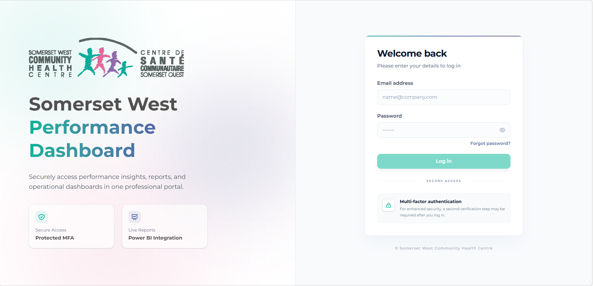

The purpose of the Performance Dashboard is to provide a high-level view of organizational performance across key domains to support monitoring, decision-making, accountability, and continuous quality improvement at Somerset West Community Health Centre. This dashboard is intended to be used by Leadership and the Board of Directors at Somerset West Clinic.
https://frontend-dot-somersetwest-dashboard-491918.nn.r.appspot.com/login
The previous url will show the following web page:

after entering the user and password, the 2 -way auth will prompt to enter security code:
then just click the middle sign in button


Overview is the first page of the dashboard(s), it is giving an overview of what the other pages are doing, click any to navigate and see the contents
| Version | Date | Description / Changes |
|---|---|---|
| 0.1 | 2026-02-24 | Initial dashboard prototype. Called Performance Dashboard Prototype SWCHC. |
| 0.2 | 2026-03-11 | Initial design including Health Quality and Health Quality Cervical Cancer pages. |
| 0.3 | 2026-02-25 | Initial MSAA design. |
| 0.4 | 2026-03-12 | Changes in MSAA and MSAA Clinical Activities. Added Pop-Up functionality for MSAA page. Redesign of the MSAA Clinical Activities page, fitting all visuals on one page. |
| 0.5 | 2026-03-17 | Successful initial connection to BambooHR via API and creation of first page design. |
| 0.6 | 2026-03-27 | Initial 4 versions of Landing Page (front of the clinic taken from different angles). |
| 0.7 | 2026-03-27 | Changes in Health Quality design (inclusion of battery shape for Client Experience visualizations). Decision to keep gauge visualization for SDD and Self-Reported Racial Identity. |
| 0.8 | 2026-04-07 | Further advancements on Human Resources page, both in data and design. |
| 0.9 | 2026-04-09 | Landing page angle finalized with text. |
| 1.0 | 2026-04-14 | MSAA: Added performance standard on all visualizations along with page navigator to MSAA and Health Quality. |
| 1.1 | 2026-04-16 | SAMI Score expanded to include Panel Size; page renamed to Capacity and Complexity. |
| 1.2 | 2026-04-17 | First release and proof-of-concept presented to Somerset West users. |
Owner: SWCHC Dashboards / dashboards@swchc.on.ca
Share Point excel files : https://swchc.sharepoint.com/sites/StrategicInitiativesIntegration/Shared Documents/3. Quality Improvement and Evaluation/Dashboard resources/Power BI Raw Files/Incident_Report.xlsx
The BambooHR connection is established via API and is currently configured under aariza@carlingtonchc.org. The API key is stored as a parameter within the Human Resources Dashboard Power BI file.
In a future transition, the connection will be migrated to dashboards@swchc.on.ca. This process will involve transferring all created reports from the current account to the new one, generating a new API key under the new account, and updating the parameter in the Power BI file accordingly.

SDD Completion:
let
// STEP 1 — SOURCE
// Connects to the Health Quality Excel file stored on SWCHC SharePoint.
// Uses Web.Contents to retrieve the file via URL.
Source = Excel.Workbook(Web.Contents("https://swchc.sharepoint.com/sites/StrategicInitiativesIntegration/Shared%20Documents/3.%20Quality%20Improvement%20and%20Evaluation/Dashboard%20resources/Power%20BI%20Raw%20Files/Health_Quality.xlsx"), null, true),
// STEP 2 — NAVIGATION
// Selects the "SDD Completion" sheet specifically from the workbook.
// Kind="Sheet" ensures we target a worksheet, not a named table or range.
#"SDD Completion_Sheet" = Source{[Item="SDD Completion", Kind="Sheet"]}[Data],
// STEP 3 — PROMOTE HEADERS
// Promotes the first row of the sheet to become the column headers.
// PromoteAllScalars=true ensures non-text values in the header row are also promoted correctly.
#"Promoted Headers" = Table.PromoteHeaders(#"SDD Completion_Sheet", [PromoteAllScalars=true]),
// STEP 4 — CHANGE COLUMN TYPES
// Assigns explicit data types to each column:
// - Fiscal Year → Integer (e.g. 2024)
// - Fiscal Quarter → Text (e.g. "Q1")
// - FiscalYearQuarterNumber → Integer (used for sorting, e.g. 20241)
// - Completion → Decimal Number (percentage value, e.g. 0.82)
// - Target → Decimal Number (benchmark percentage, e.g. 0.85)
#"Changed Type" = Table.TransformColumnTypes(#"Promoted Headers", {
{"Fiscal Year", Int64.Type},
{"Fiscal Quarter", type text},
{"FiscalYearQuarterNumber", Int64.Type},
{"Completion", type number},
{"Target", type number}
})
in
// OUTPUT
// Returns the fully typed SDD Completion table ready for the data model.
// This table connects to DateTable via Fiscal Year / Fiscal Quarter fields.
#"Changed Type"Self Reported Racial Identity
let
// STEP 1 — SOURCE
// Connects to the Health Quality Excel file stored on SWCHC SharePoint.
// Same source workbook shared across all Health Quality Ontario tables.
Source = Excel.Workbook(Web.Contents("https://swchc.sharepoint.com/sites/StrategicInitiativesIntegration/Shared%20Documents/3.%20Quality%20Improvement%20and%20Evaluation/Dashboard%20resources/Power%20BI%20Raw%20Files/Health_Quality.xlsx"), null, true),
// STEP 2 — NAVIGATION
// Selects the "Self Reported Racial Identity" sheet from the workbook.
#"Self Reported Racial Identity_Sheet" = Source{[Item="Self Reported Racial Identity", Kind="Sheet"]}[Data],
// STEP 3 — PROMOTE HEADERS
// Promotes the first row to column headers.
#"Promoted Headers" = Table.PromoteHeaders(#"Self Reported Racial Identity_Sheet", [PromoteAllScalars=true]),
// STEP 4 — CHANGE COLUMN TYPES
// Assigns explicit data types to each column:
// - Fiscal Year → Integer (e.g. 2024)
// - Fiscal Quarter → Text (e.g. "Q1")
// - FiscalYearQuarterNumber → Integer (used for sorting, e.g. 20241)
// - % Reported → Decimal Number (percentage of clients with self-reported racial identity)
// - Target → Decimal Number (benchmark percentage)
#"Changed Type" = Table.TransformColumnTypes(#"Promoted Headers", {
{"Fiscal Year", Int64.Type},
{"Fiscal Quarter", type text},
{"FiscalYearQuarterNumber", Int64.Type},
{"% Reported", type number},
{"Target", type number}
})
in
// OUTPUT
// Returns typed table of self-reported racial identity rates by fiscal quarter.
// Connects to DateTable via Fiscal Year / Fiscal Quarter fields.
#"Changed Type"Cervical Screen Income
let
// STEP 1 — SOURCE
// Connects to the Health Quality Excel file stored on SWCHC SharePoint.
Source = Excel.Workbook(Web.Contents("https://swchc.sharepoint.com/sites/StrategicInitiativesIntegration/Shared%20Documents/3.%20Quality%20Improvement%20and%20Evaluation/Dashboard%20resources/Power%20BI%20Raw%20Files/Health_Quality.xlsx"), null, true),
// STEP 2 — NAVIGATION
// Selects the "Cervical Screen Income" sheet from the workbook.
#"Cervical Screen Income_Sheet" = Source{[Item="Cervical Screen Income", Kind="Sheet"]}[Data],
// STEP 3 — PROMOTE HEADERS
// Promotes the first row to column headers.
#"Promoted Headers" = Table.PromoteHeaders(#"Cervical Screen Income_Sheet", [PromoteAllScalars=true]),
// STEP 4 — CHANGE COLUMN TYPES
// Assigns explicit data types to each column:
// - Fiscal Year → Integer (e.g. 2024)
// - Fiscal Quarter → Text (e.g. "Q1")
// - FiscalYearQuarterNumber → Integer (used for sorting, e.g. 20241)
// - Low (0 - 29k) → Decimal Number (screening rate for low income clients)
// - Medium (30k - 89k) → Decimal Number (screening rate for medium income clients)
// - High (90k+) → Decimal Number (screening rate for high income clients)
// Note: Income tiers are stratified brackets used to identify screening equity gaps.
#"Changed Type" = Table.TransformColumnTypes(#"Promoted Headers", {
{"Fiscal Year", Int64.Type},
{"Fiscal Quarter", type text},
{"FiscalYearQuarterNumber", Int64.Type},
{"Low (0 - 29k)", type number},
{"Medium (30k - 89k)", type number},
{"High (90k+)", type number}
})
in
// OUTPUT
// Returns cervical screening rates stratified by income tier, by fiscal quarter.
// Used in the Health Quality Ontario dashboard to highlight equity in screening access.
#"Changed Type"Cervical Screen Racial
let
// STEP 1 — SOURCE
// Connects to the Health Quality Excel file stored on SWCHC SharePoint.
Source = Excel.Workbook(Web.Contents("https://swchc.sharepoint.com/sites/StrategicInitiativesIntegration/Shared%20Documents/3.%20Quality%20Improvement%20and%20Evaluation/Dashboard%20resources/Power%20BI%20Raw%20Files/Health_Quality.xlsx"), null, true),
// STEP 2 — NAVIGATION
// Selects the "Cervical Screen Racial" sheet from the workbook.
#"Cervical Screen Racial_Sheet" = Source{[Item="Cervical Screen Racial", Kind="Sheet"]}[Data],
// STEP 3 — PROMOTE HEADERS
// Promotes the first row to column headers.
#"Promoted Headers" = Table.PromoteHeaders(#"Cervical Screen Racial_Sheet", [PromoteAllScalars=true]),
// STEP 4 — CHANGE COLUMN TYPES
// Assigns explicit data types to each column:
// - Fiscal Year → Integer (e.g. 2024)
// - Fiscal Quarter → Text (e.g. "Q1")
// - FiscalYearQuarterNumber → Integer (used for sorting, e.g. 20241)
// - Asian → Decimal Number (screening rate for Asian-identified clients)
// - Black/African → Decimal Number (screening rate for Black/African-identified clients)
// - Indigenous → Decimal Number (screening rate for Indigenous clients)
// - Latin → Decimal Number (screening rate for Latin-identified clients)
// - White → Decimal Number (screening rate for White-identified clients)
// - Others → Decimal Number (screening rate for clients in other racial groups)
// Note: Racial stratification is used to identify equity gaps in cervical screening access.
#"Changed Type" = Table.TransformColumnTypes(#"Promoted Headers", {
{"Fiscal Year", Int64.Type},
{"Fiscal Quarter", type text},
{"FiscalYearQuarterNumber", Int64.Type},
{"Asian", type number},
{"Black/African", type number},
{"Indigenous", type number},
{"Latin", type number},
{"White", type number},
{"Others", type number}
})
in
// OUTPUT
// Returns cervical screening rates stratified by self-reported racial identity, by fiscal quarter.
// Used in the Health Quality Ontario dashboard to highlight racial equity in screening access.
#"Changed Type"Client Exp Involvement In Care
let
// STEP 1 — SOURCE
// Connects to the Health Quality Excel file stored on SWCHC SharePoint.
Source = Excel.Workbook(Web.Contents("https://swchc.sharepoint.com/sites/StrategicInitiativesIntegration/Shared%20Documents/3.%20Quality%20Improvement%20and%20Evaluation/Dashboard%20resources/Power%20BI%20Raw%20Files/Health_Quality.xlsx"), null, true),
// STEP 2 — NAVIGATION
// Selects the "Client Exp Involvement In Care" sheet from the workbook.
#"Client Exp Involvement In Care_Sheet" = Source{[Item="Client Exp Involvement In Care", Kind="Sheet"]}[Data],
// STEP 3 — PROMOTE HEADERS
// Promotes the first row to column headers.
#"Promoted Headers" = Table.PromoteHeaders(#"Client Exp Involvement In Care_Sheet", [PromoteAllScalars=true]),
// STEP 4 — CHANGE COLUMN TYPES
// Assigns explicit data types to each column:
// - Fiscal Year → Text (e.g. "2024" — note: stored as Text here, not Integer,
// likely because this table uses annual snapshots rather than quarterly)
// - Always/Often → Decimal Number (percentage of clients who always or often feel
// involved in decisions about their care and treatment)
#"Changed Type" = Table.TransformColumnTypes(#"Promoted Headers", {
{"Fiscal Year", type text},
{"Always/Often", type number}
})
in
// OUTPUT
// Returns annual client experience scores for involvement in care.
// Source: Alchemer client survey. Used in the Health Quality Ontario dashboard.
#"Changed Type"Client Exp Comfortability
let
// STEP 1 — SOURCE
// Connects to the Health Quality Excel file stored on SWCHC SharePoint.
Source = Excel.Workbook(Web.Contents("https://swchc.sharepoint.com/sites/StrategicInitiativesIntegration/Shared%20Documents/3.%20Quality%20Improvement%20and%20Evaluation/Dashboard%20resources/Power%20BI%20Raw%20Files/Health_Quality.xlsx"), null, true),
// STEP 2 — NAVIGATION
// Selects the "Client Exp Comfortability" sheet from the workbook.
#"Client Exp Comfortability_Sheet" = Source{[Item="Client Exp Comfortability", Kind="Sheet"]}[Data],
// STEP 3 — PROMOTE HEADERS
// Promotes the first row to column headers.
#"Promoted Headers" = Table.PromoteHeaders(#"Client Exp Comfortability_Sheet", [PromoteAllScalars=true]),
// STEP 4 — CHANGE COLUMN TYPES
// Assigns explicit data types to each column:
// - Fiscal Year → Text (annual snapshot, consistent with Involvement In Care table)
// - Agree → Decimal Number (percentage of clients who always feel comfortable
// and welcome at SWCHC)
#"Changed Type" = Table.TransformColumnTypes(#"Promoted Headers", {
{"Fiscal Year", type text},
{"Agree", type number}
})
in
// OUTPUT
// Returns annual client experience scores for comfortability at SWCHC.
// Source: Alchemer client survey. Used in the Health Quality Ontario dashboard.
#"Changed Type"The ****Fiscal Year Label column
(e.g. "2024/2025") is
intentionally stored as Text to match the format used in the Client
Experience Alchemer survey data, nonetheless it has the fiscal date
logic on it. Annual tables
(Client Exp Involvement In Care, Client Exp Comfortability)
join to DateTable via this column rather than
via ****Fiscal Year ****(integer)
or ****FiscalYearQuarter
DateTable
DateTable =
ADDCOLUMNS (
// Primary date dimension for Health Quality Ontario reporting.
// Generates a continuous date range from April 1, 2020 to today.
// Start date aligns with the first SWCHC fiscal quarter included in the dashboard.
CALENDAR (DATE(2020,4,1), TODAY()),
// Calendar year
"Year", YEAR([Date]),
// Calendar month name
"Month", FORMAT([Date], "MMMM"),
// Calendar month number used for sorting Month correctly
"Month Number", MONTH([Date]),
// Calendar quarter based on calendar year
"Quarter", "Q" & FORMAT([Date], "Q"),
// Day of month
"Day", DAY([Date]),
// Calendar year-quarter label
"YearQuarter", FORMAT([Date], "YYYY") & " Q" & FORMAT([Date], "Q"),
// Fiscal Year starts in April
// Example: April 2024 to March 2025 = Fiscal Year 2024
"Fiscal Year",
IF(
MONTH([Date]) >= 4,
YEAR([Date]),
YEAR([Date]) - 1
),
// Fiscal Year Label in "YYYY/YYYY" format
// Used as a text join key for annual client experience tables
// Example: a date in fiscal year 2024 becomes "2024/2025"
"Fiscal Year Label",
FORMAT(
IF(MONTH([Date]) >= 4, YEAR([Date]), YEAR([Date]) - 1),
"0000"
) & "/" &
FORMAT(
IF(MONTH([Date]) >= 4, YEAR([Date]) + 1, YEAR([Date])),
"0000"
),
// Fiscal Quarter:
// Q1 = Apr-Jun, Q2 = Jul-Sep, Q3 = Oct-Dec, Q4 = Jan-Mar
"Fiscal Quarter",
"Q" &
SWITCH(
TRUE(),
MONTH([Date]) >= 4 && MONTH([Date]) <= 6, 1,
MONTH([Date]) >= 7 && MONTH([Date]) <= 9, 2,
MONTH([Date]) >= 10 && MONTH([Date]) <= 12, 3,
4
),
// Combined Fiscal Year and Quarter label for slicing and chart headers
"FiscalYearQuarter",
FORMAT(
IF(
MONTH([Date]) >= 4,
YEAR([Date]),
YEAR([Date]) - 1
),
"0000"
) & " Q" &
SWITCH(
TRUE(),
MONTH([Date]) >= 4 && MONTH([Date]) <= 6, 1,
MONTH([Date]) >= 7 && MONTH([Date]) <= 9, 2,
MONTH([Date]) >= 10 && MONTH([Date]) <= 12, 3,
4
),
// Fiscal month name in fiscal order
// April = 1 ... March = 12
"Fiscal Month Name", SWITCH(
MOD(MONTH([Date]) + 8, 12) + 1,
1, "Apr",
2, "May",
3, "Jun",
4, "Jul",
5, "Aug",
6, "Sep",
7, "Oct",
8, "Nov",
9, "Dec",
10, "Jan",
11, "Feb",
12, "Mar",
BLANK()
),
// Fiscal month number used to sort Fiscal Month Name in fiscal order
"Fiscal Month Number", MOD(MONTH([Date]) + 8, 12) + 1,
// Numeric fiscal year-quarter sort key
// Example: 2024 Q1 = 20241
// Used to sort FiscalYearQuarter chronologically
"FiscalYearQuarterNumber",
(IF(
MONTH([Date]) >= 4,
YEAR([Date]),
YEAR([Date]) - 1
) * 10) +
SWITCH(
TRUE(),
MONTH([Date]) >= 4 && MONTH([Date]) <= 6, 1,
MONTH([Date]) >= 7 && MONTH([Date]) <= 9, 2,
MONTH([Date]) >= 10 && MONTH([Date]) <= 12, 3,
4
)
)
As shown in the previous query dependency screenshot, MSAA has two different excel sources, one for MSAA percentage, target and performance standard, and the other one for performance and target in clinical activities
Target
let
// STEP 1 — SOURCE
// Connects to the MSAA Excel workbook stored on SWCHC SharePoint.
// This workbook contains monthly target values for MSAA indicators.
Source = Excel.Workbook(Web.Contents("https://swchc.sharepoint.com/sites/StrategicInitiativesIntegration/Shared%20Documents/3.%20Quality%20Improvement%20and%20Evaluation/Dashboard%20resources/Power%20BI%20Raw%20Files/MSAA.xlsx"), null, true),
// STEP 2 — NAVIGATION
// Selects the "Target" sheet from the workbook.
Target_Sheet = Source{[Item="Target", Kind="Sheet"]}[Data],
// STEP 3 — PROMOTE HEADERS
// Promotes the first row to column headers.
#"Promoted Headers" = Table.PromoteHeaders(Target_Sheet, [PromoteAllScalars=true]),
// STEP 4 — CHANGE COLUMN TYPES
// Assigns explicit data types to each column:
// - Fiscal Year → Integer (e.g. 2024)
// - Fiscal Month Name → Text (e.g. "Apr")
// - Fiscal Month Number → Integer (used for fiscal month sorting)
// - Fiscal Year Month → Integer (combined fiscal year-month sort key)
// - Access to Primary Care → Decimal Number (target percentage)
// - Colorectal → Decimal Number (target percentage)
// - Diabetes → Decimal Number (target percentage)
// - Mammos → Decimal Number (target percentage)
// - Paps → Decimal Number (target percentage)
#"Changed Type" = Table.TransformColumnTypes(#"Promoted Headers",{
{"Fiscal Year", Int64.Type},
{"Fiscal Month Name", type text},
{"Fiscal Month Number", Int64.Type},
{"Fiscal Year Month", Int64.Type},
{"Access to Primary Care", type number},
{"Colorectal", type number},
{"Diabetes", type number},
{"Mammos", type number},
{"Paps", type number}
})
in
// OUTPUT
// Returns the monthly MSAA target table used to compare actual performance
// against organizational targets in the MSAA dashboard.
#"Changed Type"MSAA
let
// STEP 1 — SOURCE
// Connects to the MSAA Excel workbook stored on SWCHC SharePoint.
// This workbook contains monthly actual performance values for MSAA indicators.
Source = Excel.Workbook(Web.Contents("https://swchc.sharepoint.com/sites/StrategicInitiativesIntegration/Shared%20Documents/3.%20Quality%20Improvement%20and%20Evaluation/Dashboard%20resources/Power%20BI%20Raw%20Files/MSAA.xlsx"), null, true),
// STEP 2 — NAVIGATION
// Selects the "MSAA" sheet from the workbook.
MSAA_Sheet = Source{[Item="MSAA", Kind="Sheet"]}[Data],
// STEP 3 — REMOVE TOP BLANK ROWS / SPACING ROWS
// Removes blank rows that appear before the actual header row.
// This is necessary because the sheet contains formatting or spacer rows above the data.
#"Filtered Rows" = Table.SelectRows(MSAA_Sheet, each ([Column1] <> null)),
// STEP 4 — PROMOTE HEADERS
// Promotes the first non-blank row to column headers.
#"Promoted Headers" = Table.PromoteHeaders(#"Filtered Rows", [PromoteAllScalars=true]),
// STEP 5 — CHANGE COLUMN TYPES
// Assigns explicit data types to each column:
// - Fiscal Year → Integer (e.g. 2024)
// - Fiscal Month Name → Text (e.g. "Apr")
// - Fiscal Month Number → Integer (used for fiscal month sorting)
// - Fiscal Year Month → Integer (combined fiscal year-month sort key)
// - Colorectal Pct → Decimal Number (actual percentage)
// - Diabetes Pct → Decimal Number (actual percentage)
// - Mammos Pct → Decimal Number (actual percentage)
// - Access to Primary Care → Decimal Number (actual percentage)
// - Paps Pct → Decimal Number (actual percentage)
#"Changed Type" = Table.TransformColumnTypes(#"Promoted Headers",{
{"Fiscal Year", Int64.Type},
{"Fiscal Month Name", type text},
{"Fiscal Month Number", Int64.Type},
{"Fiscal Year Month", Int64.Type},
{"Colorectal Pct", type number},
{"Diabetes Pct", type number},
{"Mammos Pct", type number},
{"Access to Primary Care", type number},
{"Paps Pct", type number}
})
in
// OUTPUT
// Returns the monthly MSAA actual performance table used for dashboard visuals
// and comparison against targets.
#"Changed Type"MSAA Clinical Activities
let
// STEP 1 — SOURCE
// Connects to the MSAA Clinical Activities Excel workbook stored on SWCHC SharePoint.
// This workbook contains quarterly service activity counts.
Source = Excel.Workbook(Web.Contents("https://swchc.sharepoint.com/sites/StrategicInitiativesIntegration/Shared%20Documents/3.%20Quality%20Improvement%20and%20Evaluation/Dashboard%20resources/Power%20BI%20Raw%20Files/MSAA_Clinical_Activities.xlsx"), null, true),
// STEP 2 — NAVIGATION
// Selects the "MSAA Clinical Activities" sheet from the workbook.
#"MSAA Clinical Activities_Sheet" = Source{[Item="MSAA Clinical Activities", Kind="Sheet"]}[Data],
// STEP 3 — PROMOTE HEADERS
// Promotes the first row to column headers.
#"Promoted Headers" = Table.PromoteHeaders(#"MSAA Clinical Activities_Sheet", [PromoteAllScalars=true]),
// STEP 4 — CHANGE COLUMN TYPES
// Assigns explicit data types to each column:
// - Fiscal Year → Integer
// - Fiscal Quarter → Text (e.g. "Q1")
// - FiscalYearQuarterNumber → Integer (sort key)
// - Individual Served → Integer count of unique clients served
// - Group Sessions → Integer count of sessions
// - Group Participant Attendances → Integer count of attendances
// - Service Provider Interactions → Integer count of interactions
// - Not Uniquely Identified Interactions → Integer count of non-unique interactions
// - Visits / Service Interactions → Integer count of visits/interactions
#"Changed Type" = Table.TransformColumnTypes(#"Promoted Headers",{
{"Fiscal Year", Int64.Type},
{"Fiscal Quarter", type text},
{"FiscalYearQuarterNumber", Int64.Type},
{"Individual Served", Int64.Type},
{"Group Sessions", Int64.Type},
{"Group Participant Attendances", Int64.Type},
{"Service Provider Interactions", Int64.Type},
{"Not Uniquely Identified Interactions", Int64.Type},
{"Visits / Service Interactions", Int64.Type}
})
in
// OUTPUT
// Returns quarterly MSAA clinical activity counts used in the dashboard
// to show service volume and engagement.
#"Changed Type"MSAA Clinical Activities Target
let
// STEP 1 — SOURCE
// Connects to the MSAA Clinical Activities Excel workbook stored on SWCHC SharePoint.
// This workbook contains quarterly target values for clinical activity indicators.
Source = Excel.Workbook(Web.Contents("https://swchc.sharepoint.com/sites/StrategicInitiativesIntegration/Shared%20Documents/3.%20Quality%20Improvement%20and%20Evaluation/Dashboard%20resources/Power%20BI%20Raw%20Files/MSAA_Clinical_Activities.xlsx"), null, true),
// STEP 2 — NAVIGATION
// Selects the "MSAA Clinical Activities Target" sheet from the workbook.
#"MSAA Clinical Activities Target_Sheet" = Source{[Item="MSAA Clinical Activities Target", Kind="Sheet"]}[Data],
// STEP 3 — PROMOTE HEADERS
// Promotes the first row to column headers.
#"Promoted Headers" = Table.PromoteHeaders(#"MSAA Clinical Activities Target_Sheet", [PromoteAllScalars=true]),
// STEP 4 — CHANGE COLUMN TYPES
// Assigns initial data types to each column.
// Some activity columns are loaded as any first because the sheet may contain blanks
// or formatting inconsistencies that need to be cleaned before final typing.
#"Changed Type" = Table.TransformColumnTypes(#"Promoted Headers",{
{"Fiscal Year", Int64.Type},
{"Fiscal Quarter", type text},
{"FiscalYearQuarterNumber", Int64.Type},
{"Individual Served", Int64.Type},
{"Group Sessions", type any},
{"Group Participant Attendances", type any},
{"Service Provider Interactions", type any},
{"Not Uniquely Identified Interactions", type any},
{"Visits / Service Interactions", type any}
}),
// STEP 5 — REMOVE BLANK ROWS
// Removes rows that are completely blank across all fields.
// This cleans up spacer rows and empty records that may exist in the source sheet.
#"Removed Blank Rows" = Table.SelectRows(#"Changed Type", each not List.IsEmpty(List.RemoveMatchingItems(Record.FieldValues(_), {"", null}))),
// STEP 6 — FINAL TYPE CLEANUP
// Reapplies integer types to the activity count columns after blank rows have been removed.
#"Changed Type1" = Table.TransformColumnTypes(#"Removed Blank Rows",{
{"Group Sessions", Int64.Type},
{"Group Participant Attendances", Int64.Type},
{"Service Provider Interactions", Int64.Type},
{"Not Uniquely Identified Interactions", Int64.Type},
{"Visits / Service Interactions", Int64.Type}
})
in
// OUTPUT
// Returns cleaned quarterly target values for MSAA clinical activities.
// This table is used to compare actual activity counts against targets.
#"Changed Type1"Performance Standard
let
// STEP 1 — SOURCE
// Connects to the MSAA Excel workbook stored on SWCHC SharePoint.
// The "Performance Standard" sheet contains standard monthly benchmark values.
Source = Excel.Workbook(Web.Contents("https://swchc.sharepoint.com/sites/StrategicInitiativesIntegration/Shared%20Documents/3.%20Quality%20Improvement%20and%20Evaluation/Dashboard%20resources/Power%20BI%20Raw%20Files/MSAA.xlsx"), null, true),
// STEP 2 — NAVIGATION
// Selects the "Performance Standard" sheet from the workbook.
#"Performance Standard_Sheet" = Source{[Item="Performance Standard", Kind="Sheet"]}[Data],
// STEP 3 — PROMOTE HEADERS
// Promotes the first row to column headers.
#"Promoted Headers" = Table.PromoteHeaders(#"Performance Standard_Sheet", [PromoteAllScalars=true]),
// STEP 4 — CHANGE COLUMN TYPES
// Assigns explicit data types to each column:
// - Fiscal Year → Integer
// - Fiscal Month Name → Text
// - Fiscal Month Number → Integer (used for sorting)
// - Fiscal Year Month → Integer (combined sort key)
// - Access to Primary Care → Decimal Number
// - Colorectal → Decimal Number
// - Diabetes → Decimal Number
// - Mammos → Decimal Number
// - Paps → Decimal Number
#"Changed Type" = Table.TransformColumnTypes(#"Promoted Headers",{
{"Fiscal Year", Int64.Type},
{"Fiscal Month Name", type text},
{"Fiscal Month Number", Int64.Type},
{"Fiscal Year Month", Int64.Type},
{"Access to Primary Care", type number},
{"Colorectal", type number},
{"Diabetes", type number},
{"Mammos", type number},
{"Paps", type number}
}),
// STEP 5 — REMOVE BLANK ROWS
// Removes blank rows from the standard table so only valid benchmark rows remain.
#"Removed Blank Rows" = Table.SelectRows(#"Changed Type", each not List.IsEmpty(List.RemoveMatchingItems(Record.FieldValues(_), {"", null})))
in
// OUTPUT
// Returns the monthly performance standard table used as a benchmark line
// in the MSAA dashboard.
#"Removed Blank Rows"Note(s):
The MSAA dashboard uses monthly target and performance standard tables, plus quarterly clinical activity tables. Monthly tables are aligned to fiscal month fields, while activity tables use fiscal quarter fields.
While Target and Performance Standard tables are almost identical in structure, they are separate because one represents organizational targets and the other represents the benchmark/performance standard

As seen in the query dependencies above, SAMI data is coming from a single excel file under sharepoint, and we are also bringing to the Capacity and Complexity dashboard data from MSAA excel file that has Panel Size data on it
SAMI
let
// STEP 1 — SOURCE
// Connects to the SAMI Excel workbook stored on SWCHC SharePoint.
// This file contains the annual SAMI score used in the dashboard.
Source = Excel.Workbook(Web.Contents("https://swchc.sharepoint.com/sites/StrategicInitiativesIntegration/Shared%20Documents/3.%20Quality%20Improvement%20and%20Evaluation/Dashboard%20resources/Power%20BI%20Raw%20Files/SAMI.xlsx"), null, true),
// STEP 2 — NAVIGATION
// Selects the first worksheet ("Sheet1") from the workbook.
Sheet1_Sheet = Source{[Item="Sheet1", Kind="Sheet"]}[Data],
// STEP 3 — PROMOTE HEADERS
// Promotes the first row to column headers.
#"Promoted Headers" = Table.PromoteHeaders(Sheet1_Sheet, [PromoteAllScalars=true]),
// STEP 4 — CHANGE COLUMN TYPES
// Assigns explicit data types to each column:
// - Fiscal Year → Integer
// - Sami → Decimal Number (annual SAMI score)
#"Changed Type" = Table.TransformColumnTypes(#"Promoted Headers", {
{"Fiscal Year", Int64.Type},
{"Sami", type number}
})
in
// OUTPUT
// Returns the annual SAMI score table used in the dashboard.
#"Changed Type"MSAA
let
// STEP 1 — SOURCE
// Connects to the MSAA Excel workbook stored on SWCHC SharePoint.
// This worksheet contains monthly MSAA performance values plus panel size.
Source = Excel.Workbook(Web.Contents("https://swchc.sharepoint.com/sites/StrategicInitiativesIntegration/Shared%20Documents/3.%20Quality%20Improvement%20and%20Evaluation/Dashboard%20resources/Power%20BI%20Raw%20Files/MSAA.xlsx"), null, true),
// STEP 2 — NAVIGATION
// Selects the "MSAA" sheet from the workbook.
MSAA_Sheet = Source{[Item="MSAA", Kind="Sheet"]}[Data],
// STEP 3 — PROMOTE HEADERS
// Promotes the first row to column headers.
#"Promoted Headers" = Table.PromoteHeaders(MSAA_Sheet, [PromoteAllScalars=true]),
// STEP 4 — CHANGE COLUMN TYPES
// Assigns explicit data types to each column:
// - Fiscal Year → Integer
// - Fiscal Month Name → Text
// - Fiscal Month Number → Integer (for sorting)
// - Fiscal Year Month → Integer (combined sort key)
// - Colorectal Pct → Decimal Number
// - Diabetes Pct → Decimal Number
// - Mammos Pct → Decimal Number
// - Access to Primary Care → Decimal Number
// - Paps Pct → Decimal Number
// - Panel Size → Integer (rostered panel denominator / reference count)
#"Changed Type" = Table.TransformColumnTypes(#"Promoted Headers", {
{"Fiscal Year", Int64.Type},
{"Fiscal Month Name", type text},
{"Fiscal Month Number", Int64.Type},
{"Fiscal Year Month", Int64.Type},
{"Colorectal Pct", type number},
{"Diabetes Pct", type number},
{"Mammos Pct", type number},
{"Access to Primary Care", type number},
{"Paps Pct", type number},
{"Panel Size", Int64.Type}
}),
// STEP 5 — REMOVE BLANK ROWS
// Removes empty rows that may exist due to formatting or spacing in the source sheet.
#"Removed Blank Rows" = Table.SelectRows(#"Changed Type", each not List.IsEmpty(List.RemoveMatchingItems(Record.FieldValues(_), {"", null})))
in
// OUTPUT
// Returns the cleaned monthly MSAA table including panel size.
// Used in the dashboard for performance calculations and denominator context.
#"Removed Blank Rows"Note:
Panel Size is included to support
denominator-based interpretation of access and screening
measures.

Incident report dashboard takes its data from the incident report excel file which is located in the same sharepoint directory as the previous pages
Incident Form
let
// STEP 1 — SOURCE
// Connects to the Incident Report Excel workbook stored on SWCHC SharePoint.
// This workbook contains monthly incident counts by incident form/category.
Source = Excel.Workbook(Web.Contents("https://swchc.sharepoint.com/sites/StrategicInitiativesIntegration/Shared%20Documents/3.%20Quality%20Improvement%20and%20Evaluation/Dashboard%20resources/Power%20BI%20Raw%20Files/Incident_Report.xlsx"), null, true),
// STEP 2 — NAVIGATION
// Selects the "Incident_Form" sheet from the workbook.
Incident_Form_Sheet = Source{[Item="Incident_Form", Kind="Sheet"]}[Data],
// STEP 3 — PROMOTE HEADERS
// Promotes the first row to column headers.
#"Promoted Headers" = Table.PromoteHeaders(Incident_Form_Sheet, [PromoteAllScalars=true]),
// STEP 4 — CHANGE COLUMN TYPES
// Assigns explicit data types to each column:
// - Fiscal Year → Integer
// - Fiscal Month Name → Text
// - Fiscal Month Number → Integer (for sorting)
// - Fiscal Year Month → Integer (combined sort key)
// - Client Safety → Integer count of client safety incidents
// - Workplace Accident/Injury → Integer count of workplace accident/injury incidents
// - Harrassment/Violence → Integer count of harassment/violence incidents
// - Theft/Property Damage → Integer count of theft or property damage incidents
// - AI/Privacy → Integer count of AI/privacy incidents
// - Others → Integer count of incidents not captured by the above categories
#"Changed Type" = Table.TransformColumnTypes(#"Promoted Headers",{
{"Fiscal Year", Int64.Type},
{"Fiscal Month Name", type text},
{"Fiscal Month Number", Int64.Type},
{"Fiscal Year Month", Int64.Type},
{"Client Safety", Int64.Type},
{"Workplace Accident/Injury", Int64.Type},
{"Harrassment/Violence", Int64.Type},
{"Theft/Property Damage", Int64.Type},
{"AI/Privacy", Int64.Type},
{"Others", Int64.Type}
})
in
// OUTPUT
// Returns the monthly incident form breakdown used in the Incident Report dashboard.
#"Changed Type"Incident Severity
let
// STEP 1 — SOURCE
// Connects to the Incident Report Excel workbook stored on SWCHC SharePoint.
// This worksheet contains incident counts by severity level.
Source = Excel.Workbook(Web.Contents("https://swchc.sharepoint.com/sites/StrategicInitiativesIntegration/Shared%20Documents/3.%20Quality%20Improvement%20and%20Evaluation/Dashboard%20resources/Power%20BI%20Raw%20Files/Incident_Report.xlsx"), null, true),
// STEP 2 — NAVIGATION
// Selects the "Incident_Severity" sheet from the workbook.
Incident_Severity_Sheet = Source{[Item="Incident_Severity", Kind="Sheet"]}[Data],
// STEP 3 — PROMOTE HEADERS
// Promotes the first row to column headers.
#"Promoted Headers" = Table.PromoteHeaders(Incident_Severity_Sheet, [PromoteAllScalars=true]),
// STEP 4 — CHANGE COLUMN TYPES
// Assigns explicit data types to each severity column:
// - Critical → Integer count of critical incidents
// - Severe → Integer count of severe incidents
// - Moderate → Integer count of moderate incidents
// - Sustainable → Integer count of sustainable incidents
#"Changed Type" = Table.TransformColumnTypes(#"Promoted Headers",{
{"Critical", Int64.Type},
{"Severe", Int64.Type},
{"Moderate", Int64.Type},
{"Sustainable", Int64.Type}
})
in
// OUTPUT
// Returns incident counts by severity level for dashboard visualization.
#"Changed Type"Incident Source
let
// STEP 1 — SOURCE
// Connects to the Incident Report Excel workbook stored on SWCHC SharePoint.
// This worksheet contains incident counts by reporting source / program area.
Source = Excel.Workbook(Web.Contents("https://swchc.sharepoint.com/sites/StrategicInitiativesIntegration/Shared%20Documents/3.%20Quality%20Improvement%20and%20Evaluation/Dashboard%20resources/Power%20BI%20Raw%20Files/Incident_Report.xlsx"), null, true),
// STEP 2 — NAVIGATION
// Selects the "Incident_Source" sheet from the workbook.
Incident_Source_Sheet = Source{[Item="Incident_Source", Kind="Sheet"]}[Data],
// STEP 3 — PROMOTE HEADERS
// Promotes the first row to column headers.
#"Promoted Headers" = Table.PromoteHeaders(Incident_Source_Sheet, [PromoteAllScalars=true]),
// STEP 4 — CHANGE COLUMN TYPES
// Assigns explicit data types to each column:
// - Fiscal Year → Integer
// - Fiscal Month Name → Text
// - Fiscal Month Number → Integer
// - Fiscal Year Month → Integer
// - HART Hub → Integer count of incidents from HART Hub
// - Community Engagement → Integer count of incidents from Community Engagement
// - Child and Youth → Integer count of incidents from Child and Youth
// - Corprate Services → Integer count of incidents from Corporate Services
// - Others → Integer count of incidents from other sources
// - Primary Health Care → Integer count of incidents from Primary Health Care
#"Changed Type" = Table.TransformColumnTypes(#"Promoted Headers",{
{"Fiscal Year", Int64.Type},
{"Fiscal Month Name", type text},
{"Fiscal Month Number", Int64.Type},
{"Fiscal Year Month", Int64.Type},
{"HART Hub", Int64.Type},
{"Community Engagement", Int64.Type},
{"Child and Youth", Int64.Type},
{"Corprate Services", Int64.Type},
{"Others", Int64.Type},
{"Primary Health Care", Int64.Type}
})
in
// OUTPUT
// Returns the monthly incident source breakdown used in the Incident Report dashboard.
#"Changed Type"Incident Type
let
// STEP 1 — SOURCE
// Connects to the Incident Report Excel workbook stored on SWCHC SharePoint.
// This worksheet contains incident counts by incident type.
Source = Excel.Workbook(Web.Contents("https://swchc.sharepoint.com/sites/StrategicInitiativesIntegration/Shared%20Documents/3.%20Quality%20Improvement%20and%20Evaluation/Dashboard%20resources/Power%20BI%20Raw%20Files/Incident_Report.xlsx"), null, true),
// STEP 2 — NAVIGATION
// Selects the "Incident_Type" sheet from the workbook.
Incident_Type_Sheet = Source{[Item="Incident_Type", Kind="Sheet"]}[Data],
// STEP 3 — PROMOTE HEADERS
// Promotes the first row to column headers.
#"Promoted Headers" = Table.PromoteHeaders(Incident_Type_Sheet, [PromoteAllScalars=true]),
// STEP 4 — CHANGE COLUMN TYPES
// Assigns explicit data types to each column:
// - Fiscal Year → Integer
// - Fiscal Month Name → Text
// - Fiscal Month Number → Integer
// - Fiscal Year Month → Integer
// - Incidence → Integer count of incident entries
// - Accidents → Integer count of accidents
// - Unusual Occurrence → Integer count of unusual occurrences
#"Changed Type" = Table.TransformColumnTypes(#"Promoted Headers",{
{"Fiscal Year", Int64.Type},
{"Fiscal Month Name", type text},
{"Fiscal Month Number", Int64.Type},
{"Fiscal Year Month", Int64.Type},
{"Incidence", Int64.Type},
{"Accidents", Int64.Type},
{"Unusual Occurrence", Int64.Type}
})
in
// OUTPUT
// Returns the monthly incident type breakdown used in the Incident Report dashboard.
#"Changed Type"Note:
The Incident Report dashboard is organized into monthly breakdowns by form, severity, source, and type. All tables share the same fiscal month structure to support consistent comparison across views.

as noted in the previous Power query transformation, the majority of data is coming from the Bamboo API connection directly, only one excel file located at sharepoint list is present in this dashboard, and that one is feeding the Vacancies Table, it includes helper queries to clean the file and get the data in a correct strucure
Span Over Control
let
// STEP 1 — SOURCE
// Connects to BambooHR custom report 2327 in CSV format.
// This report provides employee-supervisor mapping information.
Source = Csv.Document(
Web.Contents("https://swchc.bamboohr.com/api/v1/reports/2327?format=csv"),
[Delimiter=",", Columns=5, Encoding=65001, QuoteStyle=QuoteStyle.None]
),
// STEP 2 — PROMOTE HEADERS
// Promotes the first row of the CSV to column headers.
#"Promoted Headers" = Table.PromoteHeaders(Source, [PromoteAllScalars=true]),
// STEP 3 — INITIAL TYPE ASSIGNMENT
// Assigns data types to the imported columns.
#"Changed Type" = Table.TransformColumnTypes(#"Promoted Headers",{
{"Supervisor ID", Int64.Type},
{"Supervisor", type text},
{"Employee #", type text},
{"Job Title", type text},
{"Reporting to", type text}
}),
// STEP 4 — CONVERT EMPLOYEE NUMBER TO INTEGER
// Employee # is first loaded as text, then converted to integer for model joins.
#"Changed Type1" = Table.TransformColumnTypes(#"Changed Type",{
{"Employee #", Int64.Type}
}),
// STEP 5 — REMOVE ERROR ROWS
// Removes rows where Employee # could not be converted to a valid integer.
#"Removed Errors" = Table.RemoveRowsWithErrors(#"Changed Type1", {"Employee #"}),
// STEP 6 — REORDER COLUMNS
// Reorders columns to place Employee # first for easier linking and review.
#"Reordered Columns" = Table.ReorderColumns(#"Removed Errors",{
"Employee #", "Job Title", "Reporting to", "Supervisor ID", "Supervisor"
})
in
// OUTPUT
// Returns a cleaned employee-supervisor mapping table for HR reporting and hierarchy lookups.
#"Reordered Columns"Supervisor
let
// STEP 1 — SOURCE
// Connects to BambooHR custom report 2328 in CSV format.
// This report extends supervisor mapping with employment status.
Source = Csv.Document(
Web.Contents("https://swchc.bamboohr.com/api/v1/reports/2328?format=csv"),
[Delimiter=",", Columns=6, Encoding=65001, QuoteStyle=QuoteStyle.None]
),
// STEP 2 — PROMOTE HEADERS
// Promotes the first row of the CSV to column headers.
#"Promoted Headers" = Table.PromoteHeaders(Source, [PromoteAllScalars=true]),
// STEP 3 — CHANGE COLUMN TYPES
// Assigns explicit data types to all fields.
#"Changed Type" = Table.TransformColumnTypes(#"Promoted Headers",{
{"Supervisor ID", Int64.Type},
{"Supervisor", type text},
{"Employee #", Int64.Type},
{"Job Title", type text},
{"Reporting to", type text},
{"Employment Status", type text}
}),
// STEP 4 — REMOVE ERROR ROWS
// Removes rows with invalid Employee # values.
#"Removed Errors" = Table.RemoveRowsWithErrors(#"Changed Type", {"Employee #"})
in
// OUTPUT
// Returns employee-supervisor mapping with employment status for HR analysis.
#"Removed Errors"Vacancies_Open
let
// STEP 1 — SOURCE
// Connects to the Human Resources SharePoint site and retrieves all files.
Source = SharePoint.Files("https://swchc.sharepoint.com/sites/HumanResourcesOperationalWellness", [ApiVersion = 15]),
// STEP 2 — FILTER TO TARGET FILE
// Keeps only the Excel file named "Vacancies List.xlsx".
#"Filtered Rows" = Table.SelectRows(Source, each ([Extension] = ".xlsx") and ([Name] = "Vacancies List.xlsx")),
// STEP 3 — EXCLUDE HIDDEN FILES
// Removes hidden/system files so only the usable workbook remains.
#"Filtered Hidden Files1" = Table.SelectRows(#"Filtered Rows", each [Attributes]?[Hidden]? <> true),
// STEP 4 — TRANSFORM FILE CONTENT
// Applies the prebuilt transformation function to the workbook content.
#"Invoke Custom Function1" = Table.AddColumn(#"Filtered Hidden Files1", "Transform File (2)", each #"Transform File (2)"([Content])),
// STEP 5 — RENAME FILE NAME COLUMN
// Renames Name to Source.Name to preserve the file name as metadata.
#"Renamed Columns1" = Table.RenameColumns(#"Invoke Custom Function1", {"Name", "Source.Name"}),
// STEP 6 — KEEP ONLY NEEDED COLUMNS
// Keeps the source file name and transformed table output.
#"Removed Other Columns1" = Table.SelectColumns(#"Renamed Columns1", {"Source.Name", "Transform File (2)"}),
// STEP 7 — EXPAND TRANSFORMED TABLE
// Expands the transformed workbook table into standard columns.
#"Expanded Table Column1" = Table.ExpandTableColumn(#"Removed Other Columns1", "Transform File (2)", Table.ColumnNames(#"Transform File (2)"(#"Sample File (2)"))),
// STEP 8 — INITIAL TYPE ASSIGNMENT
// Applies broad type assignments before promoting the embedded headers.
#"Changed Type" = Table.TransformColumnTypes(#"Expanded Table Column1",{
{"Source.Name", type text}, {"Vacancies List", type text}, {"Column2", type text}, {"Column3", type text},
{"Column4", type text}, {"Column5", type text}, {"Column6", type text}, {"Column7", type text},
{"Column8", type text}, {"Column9", type text}, {"Column10", type text}, {"Column11", type any},
{"Column12", type text}, {"Column13", type text}, {"Column14", type any}, {"Column15", type any},
{"Column16", type any}, {"Column17", type any}, {"Column18", type any}, {"Column19", type any},
{"Column20", type any}, {"Column21", type any}, {"Column22", type text}, {"Column23", type text},
{"Column24", type text}
}),
// STEP 9 — PROMOTE HEADERS TWICE
// The source file contains two header-like rows, so headers are promoted twice
// to reach the actual field names used in the vacancies list.
#"Promoted Headers" = Table.PromoteHeaders(#"Changed Type", [PromoteAllScalars=true]),
#"Promoted Headers2" = Table.PromoteHeaders(#"Promoted Headers", [PromoteAllScalars=true]),
// STEP 10 — RENAME GENERIC COLUMNS
// Replaces placeholder column names with meaningful field names.
#"Renamed Columns" = Table.RenameColumns(#"Promoted Headers2",{
{"Column2", "Requisition ID"},
{"Column3", "# vacation"},
{"Column4", "Job Title"},
{"Column5", "Posting channels"}
}),
// STEP 11 — FINAL TYPE CLEANUP
// Applies final types to vacancy tracking fields.
#"Changed Type3" = Table.TransformColumnTypes(#"Renamed Columns",{
{"Vacancies List.xlsx", type text},
{"Requisition ID", type text},
{"# vacation", Int64.Type},
{"Job Title", type text},
{"Posting channels", type text},
{"Direction ", type text},
{"Department ", type text},
{"Classification ", type text},
{"Salary range ", type text},
{"Hiring Manager ", type text},
{"Type of Contract ", type text},
{"Length", type text},
{"FTE Value ", type number},
{"Funding source ", type text},
{"Replacement Or New", type text},
{"Requisition Approved ", type any},
{"posted", type date},
{"closed", type date},
{"First Interview", type any},
{"Offer ", type any},
{"Start Date ", type any},
{"# candidates applied", type any},
{"# Interviews", Int64.Type},
{"Succesfull Candidate", type text},
{"Offer Accepted ", type text},
{"Source of candidate ", type text}
})
in
// OUTPUT
// Returns the cleaned vacancies tracking table from SharePoint for HR vacancy reporting.
#"Changed Type3"Status
let
// STEP 1 — SOURCE
// Connects to BambooHR custom report 2325 in CSV format.
// This report provides employee identifiers, employment status, and hire/termination dates.
Source = Csv.Document(
Web.Contents("https://swchc.bamboohr.com/api/v1/reports/2325?format=csv"),
[Delimiter=",", Columns=6, Encoding=65001, QuoteStyle=QuoteStyle.None]
),
// STEP 2 — PROMOTE HEADERS
// Promotes the first row to column headers.
#"Promoted Headers" = Table.PromoteHeaders(Source, [PromoteAllScalars=true]),
// STEP 3 — CHANGE COLUMN TYPES
// Applies initial data types to employee and date fields.
#"Changed Type" = Table.TransformColumnTypes(#"Promoted Headers",{
{"Employee #", Int64.Type},
{"Employment Status", type text},
{"Last Name", type text},
{"Termination Date", type date},
{"Original Hire Date", type text},
{"Hire Date", type date}
}),
// STEP 4 — REMOVE INVALID EMPLOYEE IDS
// Removes rows with conversion errors in Employee #.
#"Removed Errors" = Table.RemoveRowsWithErrors(#"Changed Type", {"Employee #"}),
// STEP 5 — FILTER OUT NULL EMPLOYEE IDS
#"Filtered Rows" = Table.SelectRows(#"Removed Errors", each ([#"Employee #"] <> null)),
// STEP 6 — SORT FOR REVIEW
#"Sorted Rows" = Table.Sort(#"Filtered Rows",{{"Employee #", Order.Descending}}),
// STEP 7 — REMOVE SPECIAL / TEST IDS
// Excludes known non-reportable employee IDs.
#"Filtered Rows1" = Table.SelectRows(#"Sorted Rows", each ([#"Employee #"] <> 9999)),
#"Sorted Rows1" = Table.Sort(#"Filtered Rows1",{{"Employee #", Order.Ascending}}),
#"Filtered Rows2" = Table.SelectRows(#"Sorted Rows1", each ([#"Employee #"] <> 1)),
// STEP 8 — REMOVE UNUSED COLUMN
#"Removed Columns" = Table.RemoveColumns(#"Filtered Rows2",{"Original Hire Date"}),
// STEP 9 — ADD TERMINATION YEAR
// Creates a Year column from Termination Date for yearly turnover analysis.
Custom1 = Table.AddColumn(#"Removed Columns", "Year", each Date.Year([Termination Date]), Int64.Type),
// STEP 10 — KEEP ROWS WITH VALID HIRE DATE
#"Filtered Rows3" = Table.SelectRows(Custom1, each ([Hire Date] <> null)),
// STEP 11 — FINAL SORT
#"Sorted Rows2" = Table.Sort(#"Filtered Rows3",{{"Employee #", Order.Descending}})
in
// OUTPUT
// Returns the cleaned employee base table used for turnover and headcount-related analysis.
#"Sorted Rows2"Absenteeism
let
// STEP 1 — SOURCE
// Connects to BambooHR custom report 2334 in CSV format.
// This report provides YTD absence-hour fields by employee.
Source = Csv.Document(
Web.Contents("https://swchc.bamboohr.com/api/v1/reports/2334?format=csv"),
[Delimiter=",", Columns=9, Encoding=65001, QuoteStyle=QuoteStyle.None]
),
// STEP 2 — PROMOTE HEADERS
// Promotes the first row to column headers.
#"Promoted Headers" = Table.PromoteHeaders(Source, [PromoteAllScalars=true]),
// STEP 3 — CHANGE COLUMN TYPES
// Applies data types to employee, employment status, dates, and YTD leave-hour fields.
#"Changed Type" = Table.TransformColumnTypes(#"Promoted Headers",{
{"Employee #", Int64.Type},
{"Employment Status", type text},
{"Termination Date", type date},
{"Sick Leave Time taken (YTD)", type number},
{"Sick Paid Leave - TER ≥ 0.5FTE Time taken (YTD)", type number},
{"Unpaid Leave Time taken (YTD)", type number},
{"Personal Responsibility Leave Time taken (YTD)", type number},
{"Paid Personal Leave - TER & CAS Time taken (YTD)", type number},
{"Hire Date", type date}
}),
// STEP 4 — REMOVE INVALID EMPLOYEE IDS
#"Removed Errors" = Table.RemoveRowsWithErrors(#"Changed Type", {"Employee #"}),
// STEP 5 — FILTER EMPLOYEES INCLUDED IN ABSENTEEISM CALCULATION
// Excludes Casual, On Leave, Terminated, and Test records from the analysis population.
#"Filtered Rows" = Table.SelectRows(#"Removed Errors", each ([#"Employee #"] <> null) and ([Employment Status] <> "Casual" and [Employment Status] <> "On Leave" and [Employment Status] <> "Terminated" and [Employment Status] <> "Test")),
// STEP 6 — CALCULATE TOTAL ABSENT HOURS
// Sums all included non-vacation leave categories into a single YTD absence-hours field.
#"Added Custom" = Table.AddColumn(#"Filtered Rows", "Total Absent Hours", each
[#"Sick Leave Time taken (YTD)"] +
[#"Sick Paid Leave - TER ≥ 0.5FTE Time taken (YTD)"] +
[#"Unpaid Leave Time taken (YTD)"] +
[#"Personal Responsibility Leave Time taken (YTD)"] +
[#"Paid Personal Leave - TER & CAS Time taken (YTD)"]
),
// STEP 7 — TYPE TOTAL ABSENT HOURS
#"Changed Type1" = Table.TransformColumnTypes(#"Added Custom",{{"Total Absent Hours", type number}}),
// STEP 8 — MAP EMPLOYMENT STATUS TO SCHEDULED DAYS
// Converts employment status / FTE labels into standard scheduled work days per year.
// Record.FieldOrDefault returns 0 if the Employment Status value is not found in the mapping table.
Custom1 = Table.AddColumn(
#"Changed Type1",
"Scheduled Days",
each
let
ScheduleMap = [
#"GEN - 1 FTE" = 245,
#"GEN - 0.5 FTE" = 122.5,
#"GEN - 0.9 FTE" = 220.5,
#"GEN - 0.8 FTE" = 196,
#"GEN - 0.71 FTE" = 174,
#"GEN - 0.7 FTE" = 171.5,
#"GEN 0.57 FTE" = 140,
#"GEN - 0.6 FTE" = 147,
#"GEN - 0.4 FTE" = 98,
#"GEN - 0.2 FTE" = 49,
#"GEN - 0.1 FTE" = 24.5,
#"TERM 0.8" = 196,
#"Term 0.8" = 196,
#"TERM 0.6" = 147,
#"TERM 0.5" = 122.5,
#"TERM 0.3" = 73.5,
#"TERM 0.2" = 49,
#"Ter w/b 1FTE" = 245,
#"Ter w/b 0.8FTE" = 196,
#"Ter w/b 0.7FTE" = 171.5,
#"Ter w/b 0.6FTE" = 147,
#"Ter w/b 0.5FTE" = 122.5
]
in
Record.FieldOrDefault(ScheduleMap, [Employment Status], 0),
type number
),
// STEP 9 — CALCULATE SCHEDULE HOURS
// Converts scheduled days to hours using a 7-hour workday assumption.
Custom2 = Table.AddColumn(Custom1, "Schedule Hours", each [Scheduled Days] * 7),
// STEP 10 — FINAL TYPE CLEANUP
#"Changed Type2" = Table.TransformColumnTypes(Custom2,{{"Schedule Hours", type number}})
in
// OUTPUT
// Returns the absenteeism base table used to calculate absence rates.
#"Changed Type2"Absenteeism Monthly All Status
let
// STEP 1 — SOURCE
// Connects to BambooHR custom report 2334 in CSV format.
// This variant uses the same underlying YTD absence-hours report as the main absenteeism query.
Source = Csv.Document(
Web.Contents("https://swchc.bamboohr.com/api/v1/reports/2334?format=csv"),
[Delimiter=",", Columns=9, Encoding=65001, QuoteStyle=QuoteStyle.None]
),
// STEP 2 — PROMOTE HEADERS
#"Promoted Headers" = Table.PromoteHeaders(Source, [PromoteAllScalars=true]),
// STEP 3 — CHANGE COLUMN TYPES
#"Changed Type" = Table.TransformColumnTypes(#"Promoted Headers",{
{"Employee #", Int64.Type},
{"Employment Status", type text},
{"Termination Date", type date},
{"Sick Leave Time taken (YTD)", type number},
{"Sick Paid Leave - TER ≥ 0.5FTE Time taken (YTD)", type number},
{"Unpaid Leave Time taken (YTD)", type number},
{"Personal Responsibility Leave Time taken (YTD)", type number},
{"Paid Personal Leave - TER & CAS Time taken (YTD)", type number},
{"Hire Date", type date}
}),
// STEP 4 — REMOVE INVALID EMPLOYEE IDS
#"Removed Errors" = Table.RemoveRowsWithErrors(#"Changed Type", {"Employee #"}),
// STEP 5 — FILTER EMPLOYEES INCLUDED IN THIS VARIANT
// Excludes Casual, On Leave, and Test records, but retains Terminated employees.
// This may be intended for historical or alternate absenteeism logic.
#"Filtered Rows" = Table.SelectRows(#"Removed Errors", each ([#"Employee #"] <> null) and ([Employment Status] <> "Casual" and [Employment Status] <> "On Leave" and [Employment Status] <> "Test")),
// STEP 6 — CALCULATE TOTAL ABSENT HOURS
#"Added Custom" = Table.AddColumn(#"Filtered Rows", "Total Absent Hours", each
[#"Sick Leave Time taken (YTD)"] +
[#"Sick Paid Leave - TER ≥ 0.5FTE Time taken (YTD)"] +
[#"Unpaid Leave Time taken (YTD)"] +
[#"Personal Responsibility Leave Time taken (YTD)"] +
[#"Paid Personal Leave - TER & CAS Time taken (YTD)"]
),
// STEP 7 — TYPE TOTAL ABSENT HOURS
#"Changed Type1" = Table.TransformColumnTypes(#"Added Custom",{{"Total Absent Hours", type number}}),
// STEP 8 — MAP EMPLOYMENT STATUS TO SCHEDULED DAYS
Custom1 = Table.AddColumn(
#"Changed Type1",
"Scheduled Days",
each
let
ScheduleMap = [
#"GEN - 1 FTE" = 245,
#"GEN - 0.5 FTE" = 122.5,
#"GEN - 0.9 FTE" = 220.5,
#"GEN - 0.8 FTE" = 196,
#"GEN - 0.71 FTE" = 174,
#"GEN - 0.7 FTE" = 171.5,
#"GEN 0.57 FTE" = 140,
#"GEN - 0.6 FTE" = 147,
#"GEN - 0.4 FTE" = 98,
#"GEN - 0.2 FTE" = 49,
#"GEN - 0.1 FTE" = 24.5,
#"TERM 0.8" = 196,
#"Term 0.8" = 196,
#"TERM 0.6" = 147,
#"TERM 0.5" = 122.5,
#"TERM 0.3" = 73.5,
#"TERM 0.2" = 49,
#"Ter w/b 1FTE" = 245,
#"Ter w/b 0.8FTE" = 196,
#"Ter w/b 0.7FTE" = 171.5,
#"Ter w/b 0.6FTE" = 147,
#"Ter w/b 0.5FTE" = 122.5
]
in
Record.FieldOrDefault(ScheduleMap, [Employment Status], 0),
type number
),
// STEP 9 — CALCULATE SCHEDULE HOURS
Custom2 = Table.AddColumn(Custom1, "Schedule Hours", each [Scheduled Days] * 7),
// STEP 10 — FINAL TYPE CLEANUP
#"Changed Type2" = Table.TransformColumnTypes(Custom2,{{"Schedule Hours", type number}})
in
// OUTPUT
// Returns an alternate absenteeism base table that retains terminated employees.
#"Changed Type2"Absenteeism_Monthly
let
// ── CONFIG ──────────────────────────────────────────────────────────────
// BambooHR company subdomain (e.g. "acme" from acme.bamboohr.com)
CompanyDomain = Company_Domain,
// API key stored as a Power Query parameter
// Actual value is maintained outside this query
ApiKey = BambooHR_API_Key,
// Date range for time off requests — adjust as needed
DateStart = "2022-01-01",
DateEnd = "2026-12-31",
// ────────────────────────────────────────────────────────────────────────
// ── AUTHENTICATION ───────────────────────────────────────────────────────
// BambooHR uses HTTP Basic Auth: Base64 encode "apikey:x"
// Password is always literal "x" — it is ignored by BambooHR
Credentials = Binary.ToText(
Text.ToBinary(ApiKey & ":x"),
BinaryEncoding.Base64
),
// ── PULL RAW XML FROM BAMBOOHR API ───────────────────────────────────────
// Endpoint: /v1/time_off/requests
// Returns all approved time off requests within the date range
// Each request contains employee info, leave type, total hours, and daily breakdown
RawResponse = Web.Contents(
"https://api.bamboohr.com/api/gateway.php/" & CompanyDomain & "/v1/time_off/requests",
[
Query = [
start = DateStart,
end = DateEnd,
status = "approved"
]
]
),
// ── PARSE XML INTO TABLE ─────────────────────────────────────────────────
// Xml.Tables converts the raw XML response into a nested Power Query table
ParsedXML = Xml.Tables(RawResponse),
// ── EXPAND TOP-LEVEL REQUEST FIELDS ─────────────────────────────────────
// Each row = one time off request
// Extracts: request id, employee, start/end dates, type, amount, dates breakdown
Requests = Table.ExpandTableColumn(
ParsedXML, "Table",
{"id", "employee", "start", "end", "type", "amount", "dates"}
),
// ── EXPAND EMPLOYEE ──────────────────────────────────────────────────────
// employee column contains:
// Element:Text = employee full name
// Attribute:id = employee ID (matches Employee # in your HR table)
#"Expanded employee" = Table.ExpandTableColumn(
Requests, "employee",
{"Element:Text", "Attribute:id"},
{"Employee Name", "Employee #"}
),
// ── EXPAND LEAVE TYPE ────────────────────────────────────────────────────
// type column contains:
// Element:Text = leave type name (e.g. "Sick Leave", "Vacation")
// Attribute:id = leave type ID (numeric, BambooHR internal)
// Attribute:icon = icon name used in BambooHR UI (e.g. "palm-trees")
#"Expanded type" = Table.ExpandTableColumn(
#"Expanded employee", "type",
{"Element:Text", "Attribute:id", "Attribute:icon"},
{"Leave Type", "Leave Type ID", "Leave Type Icon"}
),
#"Filtered Rows" = Table.SelectRows(#"Expanded type", each ([Leave Type] <> "Vacation")),
// ── EXPAND AMOUNT ────────────────────────────────────────────────────────
// amount column contains:
// Element:Text = total hours for the entire request (e.g. "34")
// Attribute:unit = unit of measurement (always "hours" in your setup)
#"Expanded amount" = Table.ExpandTableColumn(
#"Filtered Rows", "amount",
{"Element:Text", "Attribute:unit"},
{"Total Request Hours", "Hours Unit"}
),
// ── EXPAND DATES WRAPPER ─────────────────────────────────────────────────
// dates column is a wrapper table containing individual <date> child rows
// This first expansion unwraps the container to expose the date rows
// (Two expansions needed: outer <dates> wrapper → inner <date> rows)
#"Expanded dates" = Table.ExpandTableColumn(
#"Expanded amount", "dates",
{"date"},
{"date"}
),
// ── EXPAND INDIVIDUAL DATE ROWS ──────────────────────────────────────────
// Each <date> row represents one calendar day of the absence:
// Attribute:ymd = the actual date (YYYY-MM-DD format)
// Attribute:amount = hours absent on that specific day
// Using daily rows (not total) ensures year-boundary requests
// (e.g. Dec 23 – Jan 3) are correctly split across December and January
#"Expanded date" = Table.ExpandTableColumn(
#"Expanded dates", "date",
{"Attribute:ymd", "Attribute:amount"},
{"Date", "Daily Hours"}
),
// ── SET CORRECT DATA TYPES ───────────────────────────────────────────────
// Must happen BEFORE filtering zero days
// Daily Hours comes in as Text from XML — convert to number first
// so the > 0 comparison works correctly
#"Changed Types" = Table.TransformColumnTypes(
#"Expanded date", {
{"Employee #", Int64.Type},
{"Date", type date},
{"Daily Hours", type number}
}
),
// ── REMOVE ZERO HOUR DAYS ────────────────────────────────────────────────
// Requests include weekends and holidays within the date range at 0 hours
// These are excluded to avoid inflating row count with no impact on totals
// Now safe to compare since Daily Hours is already type number
#"Removed Zero Days" = Table.SelectRows(
#"Changed Types", // ← was #"Expanded date", now #"Changed Types"
each [Daily Hours] > 0
),
// ── KEEP ONLY THE 4 NEEDED COLUMNS ───────────────────────────────────────
// Employee # → links to HR employee table
// Leave Type → for filtering/breakdown by absence category
// Date → links to DateTable for monthly slicing in Power BI
// Daily Hours → summed in DAX: Absent Hours Monthly = SUM([Daily Hours])
#"Final Columns" = Table.SelectColumns(
#"Removed Zero Days",
{"Employee #", "Leave Type", "Date", "Daily Hours", "Employee Name"}
)
in
#"Final Columns"Suggested refreshes schedule: to be 3 times a day, like the following:


In this model:
The Health Quality fact tables (SDD Completion,
Client Experience Involvement in Care, Client Experience
Comfortability, Self‑Reported Racial Identity, Cervical Screen Income,
and Cervical Screen Racial) each feed their own visuals on the Health
Quality report pages. All these visuals must react to the same fiscal
date filters, so every Health Quality table is related to the shared
Date table.
If the relationships were single‑direction in the default way (from
the Date table to each fact table), filter propagation would work like
this: filters move from the one side to the many side
in a one‑to‑many relationship. That means they would
go DateTable → SDD Completion, DateTable → Client Exp…, DateTable → Cervical Screen Income, DateTable → Cervical Screen Racial,
and so on, but not the other way around. As a result, date filters
originating from logic in the fact tables themselves would not flow back
to the Date table or across to the other fact tables.
This same bidirectional‑filter pattern Will be seen in Capacity and Complexity - SAMI, MSAA and Incident Report Pages
The Race Tiers and Income Tiers tables are
small, static category tables created with DATATABLE. They
are not related to the fact tables. Instead, they provide a fixed set of
race and income buckets for the bar chart axes, while measures map
cervical screening results from the fact tables into these tiers.
DateTable[Date]** – Primary date key used in all
relationships; one row per calendar day. Serves as the base calendar
from which all fiscal and reporting periods are
derived.learn.microsoft+1[FiscalYearQuarterNumber] – Numeric
fiscal quarter key used to relate all quarterly fact tables (SDD
Completion, Self‑Reported Racial Identity, Cervical Screen Income,
Cervical Screen Racial) to the Date table and to one another; not used
by Client Experience tables, which are yearly
only.learn.microsoft+1[Fiscal Year] – Fiscal year attribute
derived from Date; used in slicers and as the top level of the Fiscal
Year → Fiscal Quarter hierarchy across SAMI, MSAA, and Health Quality
visuals.[Fiscal Quarter] – Fiscal quarter
attribute derived from Date; used as the second level in the Fiscal Year
→ Fiscal Quarter hierarchy and for grouping quarterly KPIs in
visuals.
In this model
Target , MSAA and
Performance Standard tables feed the first page of MSAA
dahsboard
MSAA Clinical Activities and
MSAA Clinical Activities Target feed second page of MSAA
dashboard
DateTable[Date]** – Primary date key used in all
relationships; one row per calendar day. Serves as the base calendar
from which all fiscal and reporting periods are derived[Fiscal Year Month] -key used to relate MSAA Target and
Performance Standard tables and to define the monthly grain of MSAA
measures and visuals[FiscalYearQuarterNumber] -**Numeric fiscal quarter
key used to link MSAA clinical activity tables at the quarterly level
and to align them with Date and other quarterly measures
In this model
Incident_Form , Incident_Source ,
Inicident_Severity and Incident_Type , all
feed each own correspondent visualization, both Incident_Type and
Incident_Form are set out to be bar charts , Incident_Source a stacekd
bar char and Incident severity holds the data for all the Incident
Rating Cards ( Critical, Severe, Moderate and Sustainable)
DateTable[Date]** – Primary date key used in all
relationships; one row per calendar day. Serves as the base calendar
from which all fiscal and reporting periods are derived[Fiscal Year Month] -key used to relate all incident
related tables to DateTable, thus allowing to define the monthly grain
of all Incident report measures and visuals[Fiscal Month Number] - used to sort out the Fiscal
Months correctly
In this model:
SAMI feeds the SAMI visual.MSAA feeds the Panel visual.DateTable.If the relationships were single‑direction in the default way (from Date to each fact), filter propagation would look like this:
DateTable → SAMI and DateTable → MSAA,
but not the other way around.Both, Date,
SAMI, and MSAA all participate in the same filter context, so both
visuals are correctly filtered by fiscal date: yearly for the SAMI
visual and monthly for the Panel visual.DateTable[Date] Primary date key used in all
relationships; one row per calendar day. Serves as the base calendar
from which all fiscal and reporting periods are derivedDateTable[Fiscal Year] Fiscal year attribute derived
from Date; used in slicers and as the top level of the Fiscal YearSAMI[Fiscal Year] Fiscal year attribute that allows
connection to DateTable; used in slicerMSAA[Fiscal Year Month]Fiscal year attribute that
allows connection to DateTable; used in slicer
In this model:
Absenteeism_Monthly and
Absenteeism_Monthly_All_Status feeds data for the Monhtly
Absenteeism Rate page of the Human Resource Dashboard.
Absenteeism_Monthly_All_Status is there to retain the
Terminated employees for the monthly calculation, they will be included
accordingly if they were active at the moment of the slicer
selectionAbsenteeism this table provides the data for the
current annual Absenteeism rate that is on the Human Resources page (
current workforce status)Status table allows the creation of the Headcount by
employment status bar chart and Headcount Categories is a
category table for ordering purposesSupervisor table feeds the data for the span of control
supervisor visual, is has a key yes no field called supervisor, which
allows to determine if the employee is a supervisor or not( use in the
filter pane) and the Reporting to and
Job Title of that reporting to supervisor , which allows to
bucket employees under their supervisorVacancies_Open table is getting the vancancies file
from somerset west sharepoint and allowing to know how many vacancies
there are, vancacies are determined if they do not have a close date
yetFiscalYearTable is a standalone table that allows to
have the Fiscal Date slicer for the turnover rate on the Human Resources
pageMeasure Table is a separated table that allows to save
important measures to the dashboard in case a a table needs to be drop
and a fresh connection is needed (if any field name on the bamboo report
side changes and refreshes cannot handle the update)DateTable[Date] in this model, this field allows the
connection to Absenteeism_Monthly through date field, thus
allowing slicer selection for monthly absenteeism rateCurrent FY Label,
FY Info Message)Cervical Screen % | Income Title,
Cervical Screen % | Racial Title,
Client Experience Title, Title SDD,
Racial Identity Title)Income Tier Pct, Race Tier Pct,
SDD Completion Measure,
SDD Completion Target Measure,
Racial Identity % Reported Measure,
Racial Identity Target Measure)SDD Completion Target ColorCode,
Racial Identity Gauge Color,
SDD + Racial Identity Combined Color)Battery HTML Comfortability,
Battery HTML Involvement)Current FY Label =
-- ============================================================
-- UTILITY: Current FY Label
-- Returns the latest fiscal year as a "YYYY/YYYY+1" string.
-- Used as a base reference for client experience titles and
-- the FY Info Message. Reads from ALL rows of DateTable
-- (ignores any slicer selection).
-- ============================================================
VAR MaxFY =
CALCULATE (
MAX ( DateTable[Fiscal Year] ),
ALL ( DateTable ) -- Removes any active filters so we always get the true latest FY
)
RETURN
-- Concatenates e.g. 2024 → "2024/2025"
FORMAT ( MaxFY, "0000" ) & "/" & FORMAT ( MaxFY + 1, "0000" )
FY Info Message =
-- ============================================================
-- UTILITY: FY Info Message
-- Builds a plain-language tooltip explaining how Ontario's
-- fiscal year is defined. Relies on [Current FY Label].
-- Example output:
-- "Ontario Fiscal Year: Apr 1 – Mar 31 of the following year.
-- Example: FY 2024/2025 = Apr 1, 2024 – Mar 31, 2025"
-- ============================================================
VAR FYLabel = [Current FY Label] -- e.g. "2024/2025"
RETURN
"Ontario Fiscal Year: Apr 1 – Mar 31 of the following year. Example: FY " &
FYLabel &
" = Apr 1, " & LEFT ( FYLabel, 4 ) & -- Extracts the start year (first 4 chars)
" – Mar 31, " & RIGHT ( FYLabel, 4 ) -- Extracts the end year (last 4 chars)Income Tier Pct =
-- ============================================================
-- DATA: Income Tier Pct
-- Returns the average cervical screening % for the income
-- tier slicer uses the categories on the
-- 'Income Tiers' table.
-- ============================================================
VAR CurrentTier = SELECTEDVALUE('Income Tiers'[Income Tier]) -- Single selected tier label
RETURN
SWITCH(CurrentTier,
-- Each branch maps a tier label to its corresponding column average
"Low (0-29k)", AVERAGE('Cervical Screen Income'[Low (0 - 29k)]),
"Medium (30k-89k)", AVERAGE('Cervical Screen Income'[Medium (30k - 89k)]),
"High (90k+)", AVERAGE('Cervical Screen Income'[High (90k+)]),
"Prefer not to Answer", AVERAGE('Cervical Screen Income'[Prefer not to Answer / Don't Know])
)Race Tier Pct =
-- ============================================================
-- DATA: Race Tier Pct
-- Same pattern as Income Tier Pct but for racial group columns
-- in the 'Cervical Screen Racial' table.
-- ============================================================
VAR CurrentTier = SELECTEDVALUE('Race Tiers'[Race Tier]) -- Single selected racial group
RETURN
SWITCH(CurrentTier,
"Asian", AVERAGE('Cervical Screen Racial'[Asian]),
"Black/African", AVERAGE('Cervical Screen Racial'[Black/African]),
"Indigenous", AVERAGE('Cervical Screen Racial'[Indigenous]),
"Latin", AVERAGE('Cervical Screen Racial'[Latin]),
"White", AVERAGE('Cervical Screen Racial'[White]),
"Others", AVERAGE('Cervical Screen Racial'[Others]),
"Prefer not to Answer/Don't Know",AVERAGE('Cervical Screen Racial'[Prefer not to Answer/Don't Know]),
BLANK() -- Fallback
)SDD Completion Measure =
-- ============================================================
-- DATA: SDD Completion Measure
-- Returns the average SDD completion rate for the selected period.
-- Slicer is single-select only.
-- FY selected (all quarters): FILTER + ALL bypasses the quarter
-- filter and returns the full-year average.
-- Single quarter selected: returns that quarter's value.
-- Nothing selected: SELECTEDVALUE returns BLANK.
-- ============================================================
VAR SelectedYear = SELECTEDVALUE(DateTable[Fiscal Year]) -- BLANK if >1 FY selected
RETURN
IF(
ISBLANK(SelectedYear),
BLANK(), -- Guard: nothing to show if no single FY is active
CALCULATE(
AVERAGE('SDD Completion'[Completion]),
FILTER(
ALL('SDD Completion'), -- Removes quarter-level filters; aggregates full FY
'SDD Completion'[Fiscal Year] = SelectedYear
)
)
)SDD Completion Target Measure =
-- ============================================================
-- DATA: SDD Completion Target Measure
-- Returns the SDD completion target for the selected period.
-- Full FY selected: MAX returns the highest target in the year,
-- assumed to be the current annual QIP-committed target.
-- Single quarter selected: returns that quarter's specific target
-- for internal period-over-period tracking.
-- BLANK if no period is selected.
-- ============================================================
VAR SelectedYear = SELECTEDVALUE(DateTable[Fiscal Year])
RETURN
IF(
ISBLANK(SelectedYear),
BLANK(),
CALCULATE(
MAX('SDD Completion'[Target]), -- Target usually is constant per FY; MAX is safe here
FILTER(
ALL('SDD Completion'),
'SDD Completion'[Fiscal Year] = SelectedYear
)
)
)Racial Identity % Reported Measure =
-- ============================================================
-- DATA: Racial Identity % Reported Measure
-- Average % of clients who reported racial identity for the
-- selected FY. Uses FILTER + ALL to bypass the quarter slicer
-- and aggregate at the full FY level regardless of how many
-- quarters are selected. Returns BLANK if more than one FY
-- is selected (SELECTEDVALUE returns BLANK in that case).
-- ============================================================
VAR SelectedYear =
SELECTEDVALUE(DateTable[Fiscal Year])
RETURN
IF(
ISBLANK(SelectedYear),
BLANK(), -- Guards against multi-FY selection
CALCULATE(
AVERAGE('Self Reported Racial Identity'[% Reported]),
FILTER(
ALL('Self Reported Racial Identity'), -- Strips quarter filters; FY re-applied manually below
'Self Reported Racial Identity'[Fiscal Year] = SelectedYear
)
)
)Racial Identity Target Measure =
-- ============================================================
-- DATA: Racial Identity Target Measure
-- FY-level target for racial identity reporting.
-- MAX used for the same reason as SDD Completion Target —
-- the target is a single value repeated across quarters.
-- ============================================================
VAR SelectedYear =
SELECTEDVALUE(DateTable[Fiscal Year])
RETURN
IF(
ISBLANK(SelectedYear),
BLANK(),
CALCULATE(
MAX('Self Reported Racial Identity'[Target]),
FILTER(
ALL('Self Reported Racial Identity'),
'Self Reported Racial Identity'[Fiscal Year] = SelectedYear
)
)
)SDD Completion Target ColorCode =
-- ============================================================
-- COLOR: SDD Completion Target ColorCode
-- Compares actual vs target and returns a hex color string
-- consumed by a conditional formatting rule on the gauge.
-- #03C9B9 (teal/green) = at or above target
-- #B31B1B (carnelian) = below target
-- BLANK() = no data (gauge stays neutral)
-- ============================================================
VAR _actual = [SDD Completion Measure]
VAR _target = [SDD Completion Target Measure]
RETURN
SWITCH(
TRUE(),
NOT(ISBLANK(_actual)) && _actual >= _target, "#03C9B9", // Green
NOT(ISBLANK(_actual)) && _actual < _target, "#B31B1B", // Carnelian
BLANK() // default
)Racial Identity Gauge Color =
-- COLOR: Racial Identity Gauge Color
-- Same green/carnelian logic as SDD ColorCode but for the
-- Racial Identity gauge. Kept as a separate measure so each
-- visual can be formatted independently.
-- ============================================================
VAR _actual = [Racial Identity % Reported Measure]
VAR _target = [Racial Identity Target Measure]
RETURN
SWITCH(
TRUE(),
NOT(ISBLANK(_actual)) && _actual >= _target, "#03C9B9", // green
NOT(ISBLANK(_actual)) && _actual < _target, "#B31B1B", // carnelian
BLANK() // default
)SDD + Racial Identity Combined Color =
-- ============================================================
-- COLOR: SDD + Racial Identity Combined Color
-- Drives the page-navigator button color by combining both
-- gauge results into one signal:
-- Both green → #03C9B9 (teal) — all metrics on track
-- Both carnelian → #B31B1B (red) — all metrics behind
-- Mixed → #F59E0B (amber) — partial achievement
-- BLANK → one or both gauges have no data
-- ============================================================
VAR _sddColor = [SDD Completion Target ColorCode]
VAR _racialColor = [Racial Identity Gauge Color]
RETURN
SWITCH(
TRUE(),
_sddColor = "#03C9B9" && _racialColor = "#03C9B9", "#03C9B9", // Both Green
_sddColor = "#B31B1B" && _racialColor = "#B31B1B", "#B31B1B", // Both Carnelian
NOT(ISBLANK(_sddColor)) && NOT(ISBLANK(_racialColor)), "#F59E0B", // Mixed → Amber
BLANK() // default if either is blank
)Cervical Screen % | Income Title =
-- ============================================================
-- TITLE: Cervical Screen % | Income Title
-- Builds the chart title string for the income breakdown
-- visual. Shows a range when multiple quarters are selected,
-- or a single quarter label when only one is active.
-- Also appends the latest available quarter in the dataset
-- as a data-freshness indicator.
-- ============================================================
"Cervical Screen % | Income Groups – " &
-- Earliest and latest FQ currently active in the slicer
VAR MinSel = CALCULATE( MIN('DateTable'[FiscalYearQuarter]), ALLSELECTED('DateTable') )
VAR MaxSel = CALCULATE( MAX('DateTable'[FiscalYearQuarter]), ALLSELECTED('DateTable') )
-- Latest quarter that actually has data in this table (data freshness reference)
VAR LatestAvail = MAX( 'Cervical Screen Income'[FiscalYearQuarter] )
RETURN
IF(
MinSel = MaxSel,
"Fiscal Quarter " & MinSel, -- Single quarter selected
"Fiscal Quarters " & MinSel & " to " & MaxSel -- Range of quarters selected
) & " (Latest Selected Q: " & LatestAvail & ")" -- Always show latest availableCervical Screen % | Racial Title =
-- ============================================================
-- TITLE: Cervical Screen % | Racial Title
-- Builds the chart title string for the Racial breakdown
-- visual. Shows a range when multiple quarters are selected,
-- or a single quarter label when only one is active.
-- Also appends the latest available quarter in the dataset
-- as a data-freshness indicator.
-- ============================================================
"Cervical Screen % | Racial Groups – " &
VAR MinSel = CALCULATE( MIN('DateTable'[FiscalYearQuarter]), ALLSELECTED('DateTable') )
VAR MaxSel = CALCULATE( MAX('DateTable'[FiscalYearQuarter]), ALLSELECTED('DateTable') )
VAR LatestAvail = MAX( 'Cervical Screen Income'[FiscalYearQuarter] )
RETURN
IF(
MinSel = MaxSel,
"Fiscal Quarter " & MinSel,
"Fiscal Quarters " & MinSel & " to " & MaxSel
) & " (Latest Selected Q: " & LatestAvail & ")"Client Experience Title =
-- ============================================================
-- TITLE: Client Experience Title
-- Shows the selected fiscal year in the title, or a prompt
-- when no year is selected. Reads from DateTable slicer
-- (Fiscal Year Label column, e.g. "FY 2024/25").
-- ============================================================
VAR SelectedYear = SELECTEDVALUE(DateTable[Fiscal Year Label])
RETURN
IF(
ISBLANK(SelectedYear),
"Client Experience: | No Fiscal Year Selected", -- Prompt when slicer is clear
"Client Experience: (" & SelectedYear & ")" -- e.g. "Client Experience: (FY 2024/25)"
)Title SDD =
-- ============================================================
-- TITLE: Title SDD
-- Most complex title measure — handles four distinct states:
-- 1. No fiscal year selected
-- 2. FY selected but no single quarter (multiple periods)
-- 3. FY + quarter selected but no matching fact data
-- 4. Full data available → shows period + FY-level target
--
-- HasFactData checks the specific FY+quarter intersection
-- so the title can distinguish "data exists" from "no data".
-- TargetValue uses ALL + FILTER (FY only) because the target
-- is the same for every quarter within a FY.
-- ============================================================
VAR SelectedYear = SELECTEDVALUE(DateTable[Fiscal Year])
VAR SelectedQuarter = SELECTEDVALUE(DateTable[Fiscal Quarter])
VAR PeriodLabel = FORMAT(SelectedYear, "0") & IF(ISBLANK(SelectedQuarter), "", " " & SelectedQuarter)
VAR HasFactData =
NOT ISBLANK(
CALCULATE(
AVERAGE('SDD Completion'[Completion]),
FILTER(
ALL('SDD Completion'),
'SDD Completion'[Fiscal Year] = SelectedYear &&
'SDD Completion'[Fiscal Quarter] = SelectedQuarter
)
)
)
VAR TargetValue =
CALCULATE(
MAX('SDD Completion'[Target]),
FILTER(
ALL('SDD Completion'),
'SDD Completion'[Fiscal Year] = SelectedYear
)
)
RETURN
SWITCH(
TRUE(),
ISBLANK(SelectedYear),
"Sociodemographic Data Completion – Clients 13 Years and Older | No Fiscal Period Selected",
ISBLANK(SelectedQuarter),
"Sociodemographic Data Completion – Clients 13 Years and Older | " & FORMAT(SelectedYear, "0") & " | Multiple Periods Selected",
NOT HasFactData,
"Sociodemographic Data Completion – Clients 13 Years and Older | " & PeriodLabel & " No Available Data",
TRUE(),
"Sociodemographic Data Completion – Clients 13 Years and Older | " & PeriodLabel & " | Target: " & FORMAT(TargetValue, "0%")
)Racial Identity Title =
-- ============================================================
-- TITLE: Racial Identity Title
-- Same four-state pattern as Title SDD, applied to the
-- Self Reported Racial Identity table.
-- ============================================================
VAR SelectedYear = SELECTEDVALUE(DateTable[Fiscal Year])
VAR SelectedQuarter = SELECTEDVALUE(DateTable[Fiscal Quarter])
VAR PeriodLabel = FORMAT(SelectedYear, "0")
& IF(ISBLANK(SelectedQuarter), "", " " & SelectedQuarter)
VAR HasFactData =
NOT ISBLANK(
CALCULATE(
AVERAGE('Self Reported Racial Identity'[% Reported]),
FILTER(
ALL('Self Reported Racial Identity'),
'Self Reported Racial Identity'[Fiscal Year] = SelectedYear
&& 'Self Reported Racial Identity'[Fiscal Quarter] = SelectedQuarter
)
)
)
VAR TargetValue =
CALCULATE(
MAX('Self Reported Racial Identity'[Target]),
FILTER(
ALL('Self Reported Racial Identity'),
'Self Reported Racial Identity'[Fiscal Year] = SelectedYear
)
)
RETURN
SWITCH(
TRUE(),
ISBLANK(SelectedYear),
"Self Reported Racial Identity | Rostered Clients 13 Years and Older | No Fiscal Period Selected",
ISBLANK(SelectedQuarter),
"Self Reported Racial Identity | Rostered Clients 13 Years and Older | " &
FORMAT(SelectedYear, "0") & " | Multiple Periods Selected",
NOT HasFactData,
"Self Reported Racial Identity | Rostered Clients 13 Years and Older | " &
PeriodLabel & " | No Available Data",
TRUE(),
"Self Reported Racial Identity | Rostered Clients 13 Years and Older | " &
PeriodLabel &
" | Target: " & FORMAT(TargetValue, "0%")
)Battery HTML Comfortability =
-- ============================================================
-- HTML RENDER: Battery HTML Comfortability
-- Renders an animated battery-style bar showing what % of
-- clients responded "Agree" on the Comfortability question.
--
-- Source: 'Client Exp Comfortability'[Agree] (already a 0–1
-- proportion — multiplied by 100 for display).
--
-- SELECTEDVALUE on Fiscal Year guards against multi-year
-- selections returning a meaningless average; returns the
-- "(Blank)" placeholder HTML instead.
--
-- The HTML string is built entirely in DAX. Two paths:
-- • BLANK → static "(Blank)" centered message
-- • Valid → full battery widget with JS animation
-- ============================================================
VAR SelectedYear = SELECTEDVALUE('Client Exp Comfortability'[Fiscal Year])
VAR Pct = IF(
ISBLANK(SelectedYear),
BLANK(),
SELECTEDVALUE('Client Exp Comfortability'[Agree]) * 100
)
RETURN
IF(
ISBLANK(Pct),
"<!DOCTYPE html><html><body style='display:flex;justify-content:center;align-items:center;height:162px;width:412px;background:transparent;'><p style='font-size:28px;color:#999999;font-weight:600;text-align:center;margin:0;'>(Blank)</p></body></html>",
"<!DOCTYPE html><html><head><style>
body{margin:0;display:flex;justify-content:center;align-items:center;height:162px;width:412px;background:transparent;}
.battery-wrap{display:flex;flex-direction:row;align-items:center;gap:12px;}
.tip{width:14px;height:40px;background:#14C0A4;border-radius:0 4px 4px 0;}
.battery-container{position:relative;width:300px;height:80px;border:4px solid #14C0A4;border-radius:10px;overflow:hidden;background:#FFFFFF;}
.fill{position:absolute;left:0;top:0;bottom:0;transition:width 1.2s ease;background:#03C9B9;}
.pct-text{position:absolute;top:50%;left:50%;transform:translate(-50%,-50%);font-size:22px;font-weight:600;color:#FFFFFF;z-index:2;white-space:nowrap;}
</style></head><body>
<div class='battery-wrap'>
<div class='battery-container'>
<div class='fill' id='fill'></div>
<div class='pct-text' id='txt'></div>
</div>
<div class='tip'></div>
</div>
<script>
var pct = " & FORMAT(Pct, "0.00") & ";
var fill = document.getElementById('fill');
var txt = document.getElementById('txt');
fill.style.width = pct + '%';
txt.textContent = pct.toFixed(2) + '%';
</script></body></html>"
)Battery HTML Involvement =
-- ============================================================
-- HTML RENDER: Battery HTML Involvement
-- Identical structure to Battery HTML Comfortability.
-- Difference: reads 'Client Exp Involvement In Care'[Always/Often]
-- instead of [Agree] — reflects a different survey question scale.
-- ============================================================
VAR SelectedYear = SELECTEDVALUE('Client Exp Involvement In Care'[Fiscal Year])
VAR Pct = IF(
ISBLANK(SelectedYear),
BLANK(),
SELECTEDVALUE('Client Exp Involvement In Care'[Always/Often]) * 100
)
RETURN
IF(
ISBLANK(Pct),
"<!DOCTYPE html><html><body style='display:flex;justify-content:center;align-items:center;height:162px;width:412px;background:transparent;'><p style='font-size:28px;color:#999999;font-weight:600;text-align:center;margin:0;'>(Blank)</p></body></html>",
"<!DOCTYPE html><html><head><style>
body{margin:0;display:flex;justify-content:center;align-items:center;height:162px;width:412px;background:transparent;}
.battery-wrap{display:flex;flex-direction:row;align-items:center;gap:12px;}
.tip{width:14px;height:40px;background:#14C0A4;border-radius:0 4px 4px 0;}
.battery-container{position:relative;width:300px;height:80px;border:4px solid #14C0A4;border-radius:10px;overflow:hidden;background:#FFFFFF;}
.fill{position:absolute;left:0;top:0;bottom:0;transition:width 1.2s ease;background:#03C9B9;}
.pct-text{position:absolute;top:50%;left:50%;transform:translate(-50%,-50%);font-size:22px;font-weight:600;color:#FFFFFF;z-index:2;white-space:nowrap;}
</style></head><body>
<div class='battery-wrap'>
<div class='battery-container'>
<div class='fill' id='fill'></div>
<div class='pct-text' id='txt'></div>
</div>
<div class='tip'></div>
</div>
<script>
var pct = " & FORMAT(Pct, "0.00") & ";
var fill = document.getElementById('fill');
var txt = document.getElementById('txt');
fill.style.width = pct + '%';
txt.textContent = pct.toFixed(2) + '%';
</script></body></html>"
)ArchivedCum Msaa Clinical Activities =
-- ============================================================
-- ARCHIVE TABLE: Cumulative MSAA Clinical Activities Columns & Measures
-- Stores commented-out DAX calculated columns and their
-- corresponding SELECTEDVALUE measures, originally built to
-- compute cumulative MSAA clinical activity values from raw
-- quarterly data.
--
-- WHY ARCHIVED: The source team confirmed they will supply
-- pre-calculated cumulative values directly in the data
-- extract. Active measures now use SELECTEDVALUE on those
-- pre-calculated columns instead.
--
-- HOW TO RESTORE:
-- Step 1 — Recreate each commented-out calculated column
-- directly in the appropriate source table:
-- • 'MSAA Clinical Activities' for activity columns
-- • 'MSAA Clinical Activities Target' for target columns
-- Both tables contain the raw quarterly data and the
-- required FiscalYearQuarterNumber field for the
-- FILTER logic to work.
-- Do NOT recreate them in this archive table, as it
-- lacks that field entirely.
-- Step 2 — Re-enable the corresponding Cummulative [X]
-- SELECTEDVALUE measures by removing the leading
-- comment (--) from each measure's DAX expression.
-- ============================================================
{0}Access to Primary Care MSAA =
-- ============================================================
-- Access to Primary Care MSAA
-- ============================================================
-- Returns the average Access to Primary Care rate from the MSAA table.
-- Checks whether a Fiscal Year or Fiscal Month filter is active.
-- If no selection is made, returns BLANK() to suppress the visual.
-- The same filter-guard pattern (_hasSelection) is used across
-- all five MSAA measures (Breast Cancer, Cervical, Colorectal, Diabetes).
-- ============================================================
VAR _yearSelected = SELECTEDVALUE('DateTable'[Fiscal Year], "Selected Years")
VAR _monthSelected = SELECTEDVALUE('DateTable'[Fiscal Month Name], "Selected Months")
VAR _hasSelection =
ISFILTERED('DateTable'[Fiscal Year]) || ISFILTERED('DateTable'[Fiscal Month Name])
RETURN
IF(
NOT _hasSelection,
BLANK(),
AVERAGEX(
VALUES('MSAA'[Access to Primary Care]),
'MSAA'[Access to Primary Care]
)
)Breast Cancer Screening Rate =
-- ============================================================
-- Breast Cancer Screening Rate
-- ============================================================
-- Returns the average Breast Cancer (Mammos) screening rate from MSAA.
-- Follows the same filter-guard pattern as Access to Primary Care MSAA.
-- ============================================================
VAR _yearSelected = SELECTEDVALUE('DateTable'[Fiscal Year], "Selected Years")
VAR _monthSelected = SELECTEDVALUE('DateTable'[Fiscal Month Name], "Selected Months")
VAR _hasSelection =
ISFILTERED('DateTable'[Fiscal Year]) || ISFILTERED('DateTable'[Fiscal Month Name])
RETURN
IF(
NOT _hasSelection,
BLANK(),
AVERAGEX(
VALUES('MSAA'[Mammos Pct]),
'MSAA'[Mammos Pct]
)
)Cervical Cancer Screening Rate =
-- ============================================================
-- Cervical Cancer Screening Rate
-- ============================================================
-- Returns the average Cervical Cancer (Paps) screening rate from MSAA.
-- Follows the same filter-guard pattern as Access to Primary Care MSAA.
-- ============================================================
VAR _yearSelected = SELECTEDVALUE('DateTable'[Fiscal Year], "Selected Years")
VAR _monthSelected = SELECTEDVALUE('DateTable'[Fiscal Month Name], "Selected Months")
VAR _hasSelection =
ISFILTERED('DateTable'[Fiscal Year]) || ISFILTERED('DateTable'[Fiscal Month Name])
RETURN
IF(
NOT _hasSelection,
BLANK(),
AVERAGEX(
VALUES('MSAA'[Paps Pct]),
'MSAA'[Paps Pct]
)
)Colorectal Screening Rate =
-- ============================================================
-- Colorectal Screening Rate
-- ============================================================
-- Returns the average Colorectal screening rate from MSAA.
-- Follows the same filter-guard pattern as Access to Primary Care MSAA.
-- ============================================================
VAR _yearSelected = SELECTEDVALUE('DateTable'[Fiscal Year], "Selected Years")
VAR _monthSelected = SELECTEDVALUE('DateTable'[Fiscal Month Name], "Selected Months")
VAR _hasSelection =
ISFILTERED('DateTable'[Fiscal Year]) || ISFILTERED('DateTable'[Fiscal Month Name])
RETURN
IF(
NOT _hasSelection,
BLANK(),
AVERAGEX(
VALUES('MSAA'[Colorectal Pct]),
'MSAA'[Colorectal Pct]
)
)Diabetes Pct Care =
-- ============================================================
-- Diabetes Pct Care
-- ============================================================
-- Returns the average Inter-Professional Diabetes Care percentage from MSAA.
-- Follows the same filter-guard pattern as Access to Primary Care MSAA.
-- ============================================================
VAR _yearSelected = SELECTEDVALUE('DateTable'[Fiscal Year], "Selected Years")
VAR _monthSelected = SELECTEDVALUE('DateTable'[Fiscal Month Name], "Selected Months")
VAR _hasSelection =
ISFILTERED('DateTable'[Fiscal Year]) || ISFILTERED('DateTable'[Fiscal Month Name])
RETURN
IF(
NOT _hasSelection,
BLANK(),
AVERAGEX(
VALUES('MSAA'[Diabetes Pct]),
'MSAA'[Diabetes Pct]
)
)Access Perf Std =
-- ============================================================
-- Access Perf Std
-- ============================================================
-- Returns the performance standard threshold for Access to Primary Care.
-- Reads from the Performance Standard table, which contains one row
-- per fiscal month. The value therefore reflects the active date
-- filter context (Fiscal Year / Fiscal Month) set on the report page.
-- The same AVERAGEX(VALUES(...)) pattern is used across all five
-- Performance Standard measures: Cervical, Colorectal, Diabetes, Mammos.
-- ============================================================
AVERAGEX(
VALUES('Performance Standard'[Access to Primary Care]),
'Performance Standard'[Access to Primary Care]
)Cervical Perf Std =
-- ============================================================
-- Cervical Perf Std
-- ============================================================
-- Returns the performance standard threshold for Cervical (Paps) screening.
-- Follows the same pattern as Access Perf Std.
-- ============================================================
AVERAGEX(
VALUES('Performance Standard'[Paps]),
'Performance Standard'[Paps]
)Colorectal Perf Std =
-- ============================================================
-- Colorectal Perf Std
-- ============================================================
-- Returns the performance standard threshold for Colorectal screening.
-- Follows the same pattern as Access Perf Std.
-- ============================================================
AVERAGEX(
VALUES('Performance Standard'[Colorectal]),
'Performance Standard'[Colorectal]
)Diabetes Perf Std =
-- ============================================================
-- Diabetes Perf Std
-- ============================================================
-- Returns the performance standard threshold for Diabetes Care.
-- Follows the same pattern as Access Perf Std.
-- ============================================================
AVERAGEX(
VALUES('Performance Standard'[Diabetes]),
'Performance Standard'[Diabetes]
)Mammos Perf Std =
-- ============================================================
-- Mammos Perf Std
-- ============================================================
-- Returns the performance standard threshold for Breast Cancer (Mammos) screening.
-- Follows the same pattern as Access Perf Std.
-- ============================================================
AVERAGEX(
VALUES('Performance Standard'[Mammos]),
'Performance Standard'[Mammos]
)Access Primary Care Target =
-- ============================================================
-- Access Primary Care Target
-- ============================================================
-- Returns the target value for Access to Primary Care from the Target table.
-- The Target table contains one row per fiscal month, so this measure
-- reflects the active date filter context (Fiscal Year / Fiscal Month)
-- set on the report page.
-- The same AVERAGEX(VALUES(...)) pattern is used across all five
-- Target measures: Cervical Care, Colorectal, Diabetes, Breast Cancer.
-- ============================================================
AVERAGEX(
VALUES(Target[Access to Primary Care]),
Target[Access to Primary Care]
)Cervical Care Target =
-- ============================================================
-- Cervical Care Target
-- ============================================================
-- Returns the target value for Cervical (Paps) screening.
-- Follows the same pattern as Access Primary Care Target.
-- ============================================================
AVERAGEX(
VALUES(Target[Paps]),
Target[Paps]
)Colorectal Target =
-- ============================================================
-- Colorectal Target
-- ============================================================
-- Returns the target value for Colorectal screening.
-- Follows the same pattern as Access Primary Care Target.
-- ============================================================
AVERAGEX(
VALUES(Target[Colorectal]),
Target[Colorectal]
)Diabetes Target =
-- ============================================================
-- Diabetes Target
-- ============================================================
-- Returns the target value for Inter-Professional Diabetes Care.
-- Follows the same pattern as Access Primary Care Target.
-- ============================================================
AVERAGEX(
VALUES(Target[Diabetes]),
Target[Diabetes]
)Selected Fiscal Year =
-- ============================================================
-- Selected Fiscal Year
-- ============================================================
-- Returns a formatted label for the selected Fiscal Year.
-- If no year is selected, displays a default "No Fiscal Year Selected" message.
-- Used for dynamic visual titles.
-- ============================================================
VAR SelectedYear = SELECTEDVALUE('DateTable'[Fiscal Year])
RETURN
IF(
NOT ISBLANK(SelectedYear),
"Fiscal Year: " & SelectedYear,
"No Fiscal Year Selected"
)Selected Period Label =
-- ============================================================
-- Selected Period Label
-- ============================================================
-- Returns a combined "Year Month" label when both a fiscal year
-- and a single fiscal month are selected.
-- If only a year is selected, or multiple months are selected,
-- returns an instructional message prompting a single-month selection.
-- Used to label the period context in gauge HTML renders.
-- ============================================================
VAR SelectedYear = SELECTEDVALUE('DateTable'[Fiscal Year])
VAR SelectedMonth = SELECTEDVALUE('DateTable'[Fiscal Month Name])
RETURN
SWITCH(
TRUE(),
-- Single month and year selected
NOT ISBLANK(SelectedYear) && NOT ISBLANK(SelectedMonth),
SelectedYear & " " & SelectedMonth,
-- Anything else (year only, multiple months, or nothing)
"No Single Period Selected — please select a single fiscal month"
)Each measure dynamically builds an HTML bar gauge visual for Power BI's HTML Content visual. The measure for Access to Primary Care is fully documented below; the remaining four follow the identical structure with only the indicator name, MSAA measure reference, Perf Std reference, and Target reference swapped
Access to Primary Care Gauge HTML & No Available Data =
-- ============================================================
-- Access to Primary Care Gauge HTML & No Available Data
-- ============================================================
-- Renders a custom HTML bar gauge for the Access to Primary Care MSAA indicator.
--
-- Logic flow:
-- 1. Checks if any date filter is active (_hasSelection).
-- 2. Checks if multiple months are selected (_isMultiMonth) — if so,
-- displays an "Avg. for [period]" italic label above the bar.
-- 3. Calculates _val as the average across selected months using AVERAGEX.
-- 4. Compares _val against the Performance Standard (_perf):
-- - Bar color = teal (#03C9B9) if meeting or exceeding standard
-- - Bar color = red (#B31B1B) if below standard
-- 5. Positions two vertical marker lines on the bar:
-- - Red line = Performance Standard position
-- - Grey line = Target position
-- 6. Returns one of three outputs:
-- - _noSelection : shown when no fiscal period is selected
-- - _noData : shown when a period is selected but no data exists
-- - _gauge : the full animated HTML bar gauge
--
-- The same structure is used for all five gauge measures:
-- Colorectal Gauge HTML, Cervical Gauge HTML,
-- Diabetes Gauge HTML, Mammos Gauge HTML.
-- Only the indicator title, _val source measure, _perf, and _target
-- references change between them.
-- ============================================================
VAR _yearSelected = SELECTEDVALUE('DateTable'[Fiscal Year], "Selected Years")
VAR _monthSelected = SELECTEDVALUE('DateTable'[Fiscal Month Name], "Selected Months")
VAR _hasSelection =
ISFILTERED('DateTable'[Fiscal Year]) || ISFILTERED('DateTable'[Fiscal Month Name])
VAR _isMultiMonth =
COUNTROWS(VALUES('DateTable'[Fiscal Month Name])) > 1
VAR _periodLabel =
IF(
ISFILTERED('DateTable'[Fiscal Month Name]),
_monthSelected & " - " & _yearSelected,
_yearSelected
)
VAR _val =
IF(
_hasSelection,
AVERAGEX(
VALUES('DateTable'[Fiscal Month Name]),
CALCULATE([Access to Primary Care MSAA])
),
BLANK()
)
VAR _perf = [Access Perf Std]
VAR _target = [Access Primary Care Target]
VAR _valPct = FORMAT(_val, "0.00%")
VAR _perfPct = FORMAT(_perf * 100, "0") & "%"
VAR _targetPct = FORMAT(_target * 100, "0") & "%"
VAR _barColor = IF(_val >= _perf, "#03C9B9", "#B31B1B")
VAR _barWidth = FORMAT(MIN(_val, 1) * 100, "0.00") & "%"
VAR _perfLeft = FORMAT(_perf * 100, "0.00") & "%"
VAR _targetLeft = FORMAT(_target * 100, "0.00") & "%"
VAR _perfColor = "#B31B1B"
VAR _targetColor = "#555555"
VAR _avgLabel =
IF(
_isMultiMonth,
"<div style='display:flex;justify-content:flex-end;margin-top:-10px;margin-bottom:6px'>
<span style='font-family:Candara,sans-serif;font-size:10px;color:#999999 !important;font-style:italic'>Avg. for " & _periodLabel & "</span>
</div>",
""
)
VAR _noSelection =
"<div style='font-family:Candara,sans-serif;padding:24px 16px;text-align:center'>
<div style='font-size:18px;font-weight:600;color:#333333 !important;margin-bottom:8px'>Access to Primary Care</div>
<div style='font-size:12px;color:#999999 !important'>No period selected — please select a Fiscal Year or Month</div>
</div>"
VAR _noData =
"<div style='font-family:Candara,sans-serif;padding:24px 16px;text-align:center'>
<div style='font-size:18px;font-weight:600;color:#333333 !important;margin-bottom:8px'>Access to Primary Care</div>
<div style='font-size:12px;color:#999999 !important'>No data available for " & _periodLabel & "</div>
</div>"
VAR _gauge =
"<div style='font-family:Candara,sans-serif;padding:12px 8px 8px 8px'>
<style>
@keyframes fillBar{from{width:0%}to{width:" & _barWidth & "}}
.msaa-bar{height:100%;width:" & _barWidth & ";background:" & _barColor & ";border-radius:4px;animation:fillBar 2s ease-in-out forwards}
</style>
<div style='display:flex;justify-content:space-between;align-items:baseline;margin-bottom:14px'>
<span style='font-family:Candara,sans-serif;font-size:18px;font-weight:600;color:#333333 !important'>Access to Primary Care</span>
<span style='font-family:Candara,sans-serif;font-size:24px;font-weight:700;color:" & _barColor & " !important'>" & _valPct & "</span>
</div>" &
_avgLabel &
"<div style='position:relative;height:36px;margin-bottom:4px'>
<div style='position:absolute;left:" & _perfLeft & ";transform:translateX(-90%);display:flex;flex-direction:column;align-items:center'>
<span style='font-family:Candara,sans-serif;font-size:10px;color:" & _perfColor & " !important;font-weight:700 !important;white-space:nowrap'>Perf. Std.</span>
<span style='font-family:Candara,sans-serif;font-size:13px;font-weight:700;color:" & _perfColor & " !important'>" & _perfPct & "</span>
</div>
<div style='position:absolute;left:" & _targetLeft & ";transform:translateX(-70%);display:flex;flex-direction:column;align-items:center'>
<span style='font-family:Candara,sans-serif;font-size:10px;color:" & _targetColor & " !important;font-weight:700 !important;white-space:nowrap'>Target</span>
<span style='font-family:Candara,sans-serif;font-size:13px;font-weight:700;color:" & _targetColor & " !important'>" & _targetPct & "</span>
</div>
</div>
<div style='position:relative;height:22px;background:#e8e8e8;border-radius:4px;margin-bottom:6px'>
<div class='msaa-bar'></div>
<div style='position:absolute;left:" & _perfLeft & ";top:0;bottom:0;width:3px;background-color:" & _perfColor & " !important;transform:translateX(-50%);z-index:10'></div>
<div style='position:absolute;left:" & _targetLeft & ";top:0;bottom:0;width:3px;background-color:" & _targetColor & " !important;transform:translateX(-50%);z-index:10'></div>
</div>
<div style='position:relative;margin-top:4px'>
<div style='width:100%;border-top:1px solid #bbb'></div>
<div style='display:flex;justify-content:space-between'>
<span style='display:inline-flex;flex-direction:column;align-items:center'><span style='width:1px;height:5px;background:#bbb'></span><span style='font-family:Candara,sans-serif;font-size:10px;color:#999999 !important'>0%</span></span>
<span style='display:inline-flex;flex-direction:column;align-items:center'><span style='width:1px;height:5px;background:#bbb'></span><span style='font-family:Candara,sans-serif;font-size:10px;color:#999999 !important'>10%</span></span>
<span style='display:inline-flex;flex-direction:column;align-items:center'><span style='width:1px;height:5px;background:#bbb'></span><span style='font-family:Candara,sans-serif;font-size:10px;color:#999999 !important'>20%</span></span>
<span style='display:inline-flex;flex-direction:column;align-items:center'><span style='width:1px;height:5px;background:#bbb'></span><span style='font-family:Candara,sans-serif;font-size:10px;color:#999999 !important'>30%</span></span>
<span style='display:inline-flex;flex-direction:column;align-items:center'><span style='width:1px;height:5px;background:#bbb'></span><span style='font-family:Candara,sans-serif;font-size:10px;color:#999999 !important'>40%</span></span>
<span style='display:inline-flex;flex-direction:column;align-items:center'><span style='width:1px;height:5px;background:#bbb'></span><span style='font-family:Candara,sans-serif;font-size:10px;color:#999999 !important'>50%</span></span>
<span style='display:inline-flex;flex-direction:column;align-items:center'><span style='width:1px;height:5px;background:#bbb'></span><span style='font-family:Candara,sans-serif;font-size:10px;color:#999999 !important'>60%</span></span>
<span style='display:inline-flex;flex-direction:column;align-items:center'><span style='width:1px;height:5px;background:#bbb'></span><span style='font-family:Candara,sans-serif;font-size:10px;color:#999999 !important'>70%</span></span>
<span style='display:inline-flex;flex-direction:column;align-items:center'><span style='width:1px;height:5px;background:#bbb'></span><span style='font-family:Candara,sans-serif;font-size:10px;color:#999999 !important'>80%</span></span>
<span style='display:inline-flex;flex-direction:column;align-items:center'><span style='width:1px;height:5px;background:#bbb'></span><span style='font-family:Candara,sans-serif;font-size:10px;color:#999999 !important'>90%</span></span>
<span style='display:inline-flex;flex-direction:column;align-items:center'><span style='width:1px;height:5px;background:#bbb'></span><span style='font-family:Candara,sans-serif;font-size:10px;color:#999999 !important'>100%</span></span>
</div>
</div>
</div>"
RETURN
IF(
NOT _hasSelection,
_noSelection,
IF(
ISBLANK(_val),
_noData,
_gauge
)
)MSAA Page Accent Color =
-- ============================================================
-- Returns a single HEX color code used to drive page-navigator accent
-- styling
--
-- Logic:
-- Reads the ColorCode from each of the five indicator Target measures:
-- Access to Primary Care, Cervical, Colorectal, Diabetes, Breast Cancer.
-- Each ColorCode measure returns either:
-- "#B31B1B" — the indicator is below its Performance Standard
-- "#03C9B9" — the indicator is meeting or exceeding its Performance Standard
--
-- If ANY single indicator is in a red state (#B31B1B), the entire
-- page navigator accent turns red — signalling that at least one area needs attention.
-- Only when ALL five indicators are green does the accent return teal (#03C9B9).
--
-- Color legend:
-- #B31B1B → Red — one or more indicators below Performance Standard
-- #03C9B9 → Teal — all indicators meeting or exceeding Performance Standard
-- ============================================================
VAR _access = [Acccess Primary Care Target ColorCode]
VAR _cervical = [Cervical Target ColorCode]
VAR _colorectal = [Colorectal Target ColorCode]
VAR _diabetes = [Diabetes Target ColorCode]
VAR _breast = [Breast Cancer Target ColorCode]
RETURN
SWITCH(
TRUE(),
_access = "#B31B1B", "#B31B1B",
_cervical = "#B31B1B", "#B31B1B",
_colorectal = "#B31B1B", "#B31B1B",
_diabetes = "#B31B1B", "#B31B1B",
_breast = "#B31B1B", "#B31B1B",
"#03C9B9" -- all green fallthrough
)Acccess Primary Care Target ColorCode =
-- ============================================================
-- Returns a HEX color code based on whether the Access to Primary
-- Care MSAA value meets its Performance Standard threshold.
--
-- Logic:
-- Compares the actual MSAA value (_actual) against the
-- Performance Standard (_Perf_Std) for the selected period.
--
-- Three possible outcomes:
-- #03C9B9 (Teal) — data exists AND actual >= Performance Standard
-- #B31B1B (Carnelian) — data exists AND actual < Performance Standard
-- #FFFFFF (White) — no data available for the selected period (BLANK)
--
-- This color code is consumed by [MSAA Page Accent Color] to determine
-- the overall page-level accent state.
--
-- The same three-condition SWITCH structure is used across all five
-- indicator ColorCode measures:
-- Cervical Target ColorCode, Colorectal Target ColorCode,
-- Diabetes Target ColorCode, Breast Cancer Target ColorCode.
-- Only the _actual source measure and _Perf_Std reference change.
--
-- Note: "Acccess" contains a typo (three c's) — kept as-is to match
-- the existing measure name referenced throughout the model.
-- ============================================================
VAR _actual = [Access to Primary Care MSAA]
VAR Perf_Std = [Access Perf Std]
RETURN
SWITCH(
TRUE(),
NOT(ISBLANK(_actual)) && _actual >= Perf_Std, "#03C9B9", // green
NOT(ISBLANK(_actual)) && _actual < Perf_Std, "#B31B1B", // carnelian
"#FFFFFF" // default
)Incident Form Title =
-- ============================================================
-- Incident Form Title
-- ============================================================
-- Returns a dynamic chart title for the "Form of Incident" visual.
--
-- Logic flow:
-- 1. Checks if a Fiscal Year or Month filter is active (HasSelection).
-- 2. Checks if any rows exist in Incident_Form under the current
-- selection (HasData), using ALLSELECTED to respect slicer context.
-- 3. Returns one of three strings:
-- - No period selected → prompts the user to pick a period
-- - No data found → informs that no incidents exist for the period
-- - Active title → "Form of Incident by [Month - Year]" or
-- "Form of Incident by [Year]" depending
-- on whether a month filter is applied
-- ============================================================
VAR HasSelection =
ISFILTERED('DateTable'[Fiscal Year]) || ISFILTERED('DateTable'[Fiscal Month Name])
VAR HasData =
CALCULATE(
COUNTROWS('Incident_Form'),
ALLSELECTED('Incident_Form')
) > 0
RETURN
IF(
NOT HasSelection,
"No period selected — please select a Fiscal Year or Month",
IF(
NOT HasData,
"No Incidents Reported in This Period",
"Form of Incident by " &
IF(
ISFILTERED('DateTable'[Fiscal Month Name]),
SELECTEDVALUE('DateTable'[Fiscal Month Name], "Selected Months")
& " - " & SELECTEDVALUE('DateTable'[Fiscal Year], "Selected Years"),
SELECTEDVALUE('DateTable'[Fiscal Year], "Selected Years")
)
)
)Incident Type Title =
-- ============================================================
-- Incident Type Title
-- ============================================================
-- Returns a dynamic chart title for the "Incidents per Type" visual.
-- Follows the same three-state logic as Incident Form Title:
-- no selection → no data → active title.
-- The HasData check references the Incident_Type table.
-- Active title format: "Incidents per Type by [Month - Year | Year]"
-- ============================================================
VAR HasSelection =
ISFILTERED('DateTable'[Fiscal Year]) || ISFILTERED('DateTable'[Fiscal Month Name])
VAR HasData =
CALCULATE(
COUNTROWS('Incident_Type'),
ALLSELECTED('Incident_Type')
) > 0
RETURN
IF(
NOT HasSelection,
"No period selected — please select a Fiscal Year or Month",
IF(
NOT HasData,
"No Incidents Reported in This Period",
"Incidents per Type by " &
IF(
ISFILTERED('DateTable'[Fiscal Month Name]),
SELECTEDVALUE('DateTable'[Fiscal Month Name], "Selected Months")
& " - " & SELECTEDVALUE('DateTable'[Fiscal Year], "Selected Years"),
SELECTEDVALUE('DateTable'[Fiscal Year], "Selected Years")
)
)
)Incident Source Title =
-- ============================================================
-- Incident Source Title
-- ============================================================
-- Returns a dynamic chart title for the "Source of Incidents | Program" visual.
-- Follows the same three-state logic as Incident Form Title.
-- The HasData check references the Incident_Source table.
-- Active title format: "Source of Incidents | Program by [Month - Year | Year]"
-- ============================================================
VAR HasSelection =
ISFILTERED('DateTable'[Fiscal Year]) || ISFILTERED('DateTable'[Fiscal Month Name])
VAR HasData =
CALCULATE(
COUNTROWS('Incident_Source'),
ALLSELECTED('Incident_Source')
) > 0
RETURN
IF(
NOT HasSelection,
"No period selected — please select a Fiscal Year or Month",
IF(
NOT HasData,
"No Incidents Reported in This Period",
"Source of Incidents | Program by " &
IF(
ISFILTERED('DateTable'[Fiscal Month Name]),
SELECTEDVALUE('DateTable'[Fiscal Month Name], "Selected Months")
& " - " & SELECTEDVALUE('DateTable'[Fiscal Year], "Selected Years"),
SELECTEDVALUE('DateTable'[Fiscal Year], "Selected Years")
)
)
)Show Data =
-- ============================================================
-- Show Data
-- ============================================================
-- Returns 1 if any date filter (Fiscal Year or Fiscal Month) is active,
-- 0 otherwise.
-- Purpose: suppresses Power BI's default behaviour of rendering all data
-- when no slicer selection is made. Used as a visual-level filter
-- (Show Data = 1) on charts throughout this dashboard, matching the
-- blank-until-selected behaviour of the Health Quality and MSAA dashboards.
-- ============================================================
IF(
ISFILTERED('DateTable'[Fiscal Year]) || ISFILTERED('DateTable'[Fiscal Month Name]),
1, 0
)Critical Incident =
-- ============================================================
-- Critical Incident
-- ============================================================
-- Returns the total count of Critical severity incidents from
-- the Incident_Severity table.
-- ALLSELECTED is used to respect any active slicer filters on
-- Incident_Severity while ignoring row context from visual interactions.
-- The same SUM + ALLSELECTED pattern is applied across all four
-- severity measures: Severe, Moderate, and Sustainable.
-- ============================================================
CALCULATE(
SUM(Incident_Severity[Critical]),
ALLSELECTED(Incident_Severity)
)Severe Incident =
-- ============================================================
-- Severe Incident
-- ============================================================
-- Returns the total count of Severe severity incidents.
-- Follows the same pattern as Critical Incident.
-- ============================================================
CALCULATE(
SUM(Incident_Severity[Severe]),
ALLSELECTED(Incident_Severity)
)Moderate Incident =
-- ============================================================
-- Moderate Incident
-- ============================================================
-- Returns the total count of Moderate severity incidents.
-- Follows the same pattern as Critical Incident.
-- ============================================================
CALCULATE(
SUM(Incident_Severity[Moderate]),
ALLSELECTED(Incident_Severity)
)Sustainable Incident =
-- ============================================================
-- Sustainable Incident
-- ============================================================
-- Returns the total count of Sustainable severity incidents.
-- Follows the same pattern as Critical Incident.
-- ============================================================
CALCULATE(
SUM(Incident_Severity[Sustainable]),
ALLSELECTED(Incident_Severity)
)Headcount =
-- ============================================================
-- Returns the total count of distinct active employees from the
-- Status table, excluding anyone with an "Terminated" employment status.
-- Note: employees with a blank Employment Status are intentionally
-- included — a blank status may indicate a future hire date rather
-- than a missing record.
-- ============================================================
CALCULATE(
DISTINCTCOUNT('Status'[Employee #]),
FILTER(
'Status',
'Status'[Employment Status] <> "Terminated"
-- && NOT ISBLANK('Status'[Employment Status])
-- Excluded: blank status may indicate future hire date, not missing data
)
)Full Time Headcount =
-- ============================================================
-- Returns the count of employees classified as Full Time.
-- Matches on the following Employment Status codes:
-- "GEN - 1 FTE" → Active full-time general staff
-- "Ter w/b 1FTE" → Full-time with termination within the period
-- "TERM 1" → Full-time termination code
-- ============================================================
COUNTROWS(
FILTER(
'Status',
'Status'[Employment Status] IN {"GEN - 1 FTE", "Ter w/b 1FTE", "TERM 1"}
)
)Part Time Headcount =
-- ============================================================
-- Returns the count of employees classified as Part Time.
-- Part-time status is identified by matching several Employment
-- Status code patterns:
-- "GEN - 0.*" → Active general part-time (any FTE fraction)
-- "GEN 0.57 FTE" → Specific part-time FTE code not caught by the pattern above
-- "Ter w/b *" → Termination with benefits, excluding full-time (1FTE)
-- "TERM 0.*" → Part-time termination codes (uppercase)
-- "Term 0.*" → Part-time termination codes (mixed case)
-- ============================================================
COUNTROWS(
FILTER(
'Status',
CONTAINSSTRING('Status'[Employment Status], "GEN - 0.") ||
'Status'[Employment Status] = "GEN 0.57 FTE" ||
(
CONTAINSSTRING('Status'[Employment Status], "Ter w/b") &&
'Status'[Employment Status] <> "Ter w/b 1FTE"
) ||
CONTAINSSTRING('Status'[Employment Status], "TERM 0.") ||
CONTAINSSTRING('Status'[Employment Status], "Term 0.")
)
)Casual Headcount =
-- ============================================================
-- Returns the count of employees with an Employment Status of "Casual"
-- who have not been terminated.
-- Uses SUMX(..., 1) as an equivalent to COUNTROWS with a multi-condition
-- filter that excludes terminated casuals.
-- ============================================================
SUMX(
FILTER(
'Status',
'Status'[Employment Status] = "Casual"
&& 'Status'[Employment Status] <> "Terminated"
),
1
)On Leave Headcount =
-- ============================================================
-- Returns the count of employees currently on leave, identified
-- by an Employment Status of "On Leave".
-- No termination exclusion is applied — On Leave is a distinct
-- active status in the source data.
-- ============================================================
SUMX(
FILTER(
'Status',
'Status'[Employment Status] = "On Leave"
),
1
)Headcount by Category =
-- ============================================================
-- Routes to the appropriate Headcount measure based on the
-- currently selected value in the 'Headcount Categories' slicer.
-- Used to drive a single dynamic KPI card or visual that switches
-- between headcount types without duplicating visuals.
--
-- Category → Measure mapping:
-- "Full Time" → [Full Time Headcount]
-- "Part Time" → [Part Time Headcount]
-- "Casual" → [Casual Headcount]
-- "On Leave" → [On Leave Headcount]
-- (no match) → BLANK()
-- ============================================================
SWITCH(
SELECTEDVALUE('Headcount Categories'[Category]),
"Full Time", [Full Time Headcount],
"Part Time", [Part Time Headcount],
"Casual", [Casual Headcount],
"On Leave", [On Leave Headcount],
BLANK()
)Headcount Start of Year =
-- ============================================================
-- Returns the distinct count of active employees on April 1st
-- of the selected Fiscal Year.
-- An employee is considered active on April 1st if:
-- - Their Hire Date is on or before April 1st of the selected FY, AND
-- - Their Termination Date is blank (still employed) OR
-- their Termination Date is on or after April 1st.
--
-- Used as an input to [Turnover by Fiscal Year %] alongside
-- [Headcount End of Year] to calculate average headcount.
--
-- Example: FY 2025 → YearStart = April 1, 2025
-- ============================================================
VAR SelectedFY = SELECTEDVALUE('FiscalYearTable'[Fiscal Year Number]) -- Gets the fiscal year from the slicer
VAR YearStart = DATE(SelectedFY, 4, 1) -- Calculates Apr 1st of the FY, e.g., FY 2025: DATE(2025, 4, 1) = April 1, 2025
RETURN
IF(
ISBLANK(SelectedFY),
BLANK(),
CALCULATE(
DISTINCTCOUNT('Status'[Employee #]),
-- Core filter logic: "active on April 1st"
FILTER(
ALL('Status'),
'Status'[Hire Date] <= YearStart -- Hired ON OR BEFORE April 1st of selected FY
&& (
ISBLANK('Status'[Termination Date]) -- Still employed at the start of the period
|| 'Status'[Termination Date] >= YearStart -- Termination date must be AFTER YearStart, e.g., 2025-02-28 < 2025-04-01 → No
)
)
)
)Headcount End of Year =
-- ============================================================
-- Returns the distinct count of active employees on March 31st
-- of the fiscal year end (the year following the selected FY).
-- An employee is considered active on March 31st if:
-- - Their Hire Date is on or before March 31st, AND
-- - Their Termination Date is blank (still employed) OR
-- their Termination Date is strictly after March 31st.
--
-- Used as an input to [Turnover by Fiscal Year %] alongside
-- [Headcount Start of Year] to calculate average headcount.
--
-- Example: FY 2025 → YearEnd = March 31, 2026
-- Termination on 2026-04-15 > 2026-03-31 → included ✓
-- Termination on 2026-03-15 < 2026-03-31 → excluded ✗
-- ============================================================
VAR SelectedFY = SELECTEDVALUE('FiscalYearTable'[Fiscal Year Number]) -- Gets the fiscal year from the slicer
VAR YearEnd = DATE(SelectedFY + 1, 3, 31) -- Calculates Mar 31st of the following year, e.g., FY 2025: DATE(2025 + 1, 3, 31) = March 31, 2026
RETURN
IF(
ISBLANK(SelectedFY),
BLANK(),
CALCULATE(
DISTINCTCOUNT('Status'[Employee #]),
-- Core filter logic: "active on March 31st"
FILTER(
ALL('Status'),
'Status'[Hire Date] <= YearEnd -- Hired ON OR BEFORE March 31st of FY end year
&& (
ISBLANK('Status'[Termination Date]) -- Still employed at the end of the period
|| 'Status'[Termination Date] > YearEnd -- Termination date must be AFTER YearEnd, e.g., 2026-04-15 > 2026-03-31 → Yes, 2026-03-15 < 2026-03-31 → No
)
)
)
)Turnover by Fiscal Year % =
-- ============================================================
-- Returns the annual voluntary/involuntary turnover rate for the
-- selected Fiscal Year, expressed as a percentage.
--
-- Formula:
-- Turnover % = Terminations during FY ÷ Average Headcount
-- where Average Headcount = ([Headcount Start of Year] + [Headcount End of Year]) / 2
--
-- Fiscal window (Ontario FY):
-- Apr 1st of the selected FY → Mar 31st of the following year
-- Example: FY 2025 = Apr 1, 2025 – Mar 31, 2026
--
-- Terminations are counted as distinct employees whose Termination Date
-- falls within the fiscal window.
-- Returns BLANK() if no Fiscal Year is selected.
-- ============================================================
VAR SelectedFY = SELECTEDVALUE('FiscalYearTable'[Fiscal Year Number]) -- Gets the fiscal year from the slicer
-- Fiscal Window: Apr 1st of selected FY to Mar 31st of following year
-- e.g., FY 2025: Apr 1, 2025 to Mar 31, 2026
VAR YearStart = DATE(SelectedFY, 4, 1) -- Apr 1st of selected FY
VAR YearEnd = DATE(SelectedFY + 1, 3, 31) -- Mar 31st of following year
-- Count distinct employees terminated within the fiscal year window
VAR Terminations =
CALCULATE(
DISTINCTCOUNT('Status'[Employee #]),
'Status'[Termination Date] >= YearStart,
'Status'[Termination Date] <= YearEnd
)
-- Average of start-of-year and end-of-year headcount
VAR AvgHeadcount =
DIVIDE([Headcount Start of Year] + [Headcount End of Year], 2)
RETURN
IF(
ISBLANK(SelectedFY),
BLANK(),
DIVIDE(Terminations, AvgHeadcount, 0)
)Absent Hours =
-- ============================================================
-- Returns the total number of absent hours from the Absenteeism table.
-- Used as the numerator in both [Absenteeism Rate] and
-- [Absenteeism Rate Monthly].
-- ============================================================
SUM('Absenteeism'[Total Absent Hours])Scheduled Hours Measure =
-- ============================================================
-- Returns the total scheduled (contracted) hours from the
-- Absenteeism table for the current filter context.
-- Used as the denominator in [Absenteeism Rate].
-- ============================================================
SUM('Absenteeism'[Schedule Hours])Scheduled Hours Monthly =
-- ============================================================
-- Returns the pro-rated scheduled hours for each active employee
-- within the current calendar month derived from the DateTable.
--
-- Logic:
-- 1. Determines the current month's start (MonthStart) and end
-- (MonthEnd) dates from the active DateTable filter context.
-- 2. Filters Absenteeism_Monthly_All_Status to employees who were
-- active at any point during the month:
-- - Hired on or before MonthEnd, AND
-- - Not yet terminated, OR terminated after MonthStart.
-- 3. For each qualifying employee, calculates the number of days
-- they were active within the month (ActiveDays), then
-- pro-rates their annual scheduled hours:
-- Pro-rated Hours = (Annual Hours / 365) × ActiveDays
--
-- This pro-ration correctly handles partial months for new hires
-- and terminations mid-month.
-- Used as the denominator in [Absenteeism Rate Monthly].
-- ============================================================
VAR MonthStart = DATE(YEAR(MAX('DateTable'[Date])), MONTH(MAX('DateTable'[Date])), 1)
VAR MonthEnd = EOMONTH(MonthStart, 0)
RETURN
SUMX(
FILTER(
'Absenteeism_Monthly_All_Status',
'Absenteeism_Monthly_All_Status'[Hire Date] <= MonthEnd &&
(ISBLANK('Absenteeism_Monthly_All_Status'[Termination Date]) || 'Absenteeism_Monthly_All_Status'[Termination Date] > MonthStart)
),
VAR ActiveStart = MAX('Absenteeism_Monthly_All_Status'[Hire Date], MonthStart)
VAR ActiveEnd = MIN(COALESCE('Absenteeism_Monthly_All_Status'[Termination Date], MonthEnd), MonthEnd)
VAR ActiveDays = IF(ActiveStart <= ActiveEnd, DATEDIFF(ActiveStart, ActiveEnd, DAY) + 1, 0)
VAR AnnualHours = 'Absenteeism_Monthly_All_Status'[Schedule Hours]
RETURN (AnnualHours / 365) * ActiveDays
)Absenteeism rate =
-- ============================================================
-- Returns the overall absenteeism rate for the selected period.
-- Formula: Absent Hours ÷ Scheduled Hours
-- Uses [Absent Hours] and [Scheduled Hours Measure] which both
-- draw from the Absenteeism table.
-- ============================================================
DIVIDE([Absent Hours], [Scheduled Hours Measure])Absenteeism Rate Monthly =
-- ============================================================
-- Returns the absenteeism rate for the current month context.
-- Formula: Absent Hours ÷ Scheduled Hours Monthly
-- Uses [Absent Hours] (from Absenteeism table) and
-- [Scheduled Hours Monthly] (pro-rated from Absenteeism_Monthly_All_Status).
-- ============================================================
DIVIDE([Absent Hours Monthly], [Scheduled Hours Monthly])Data / Aggregation — Span of Control
Span of Control Supervisor =
-- ============================================================
-- Returns the number of active direct reports for the currently
-- selected supervisor in the Supervisor table.
-- Filters the full Supervisor table (ALL) to rows where:
-- - The Supervisor ID matches the selected Employee #, AND
-- - The employee is not terminated.
-- Used specifically in the "Span of Control Supervisor by Job Title" visual.
-- ============================================================
COUNTROWS(
FILTER(
ALL('Supervisor'),
'Supervisor'[Supervisor ID] = SELECTEDVALUE('Supervisor'[Employee #])
&& 'Supervisor'[Employment Status] <> "Terminated"
)
)Vacancies Open =
-- Vacancies Open
-- ============================================================
-- Returns the count of open (unfilled) vacancies from the
-- Vacancies_Open table by counting blank values in the [closed]
-- column — a blank indicates the vacancy has not yet been closed.
-- ============================================================
COUNTBLANK(Vacancies_Open[closed])FY Info Message =
-- Returns an informational string explaining the Ontario Fiscal
-- Year convention to dashboard users unfamiliar with the Apr–Mar
-- fiscal calendar.
--
-- Dynamically builds the example using [Current FY Label], which
-- provides the selected fiscal year in "YYYY/YYYY" format.
-- Example output:
-- "Ontario Fiscal Year: Apr 1 – Mar 31 of the following year.
-- Example: FY 2025/2026 = Apr 1, 2025 – Mar 31, 2026"
--
-- LEFT(FYLabel, 4) extracts the start year; RIGHT(FYLabel, 4)
-- extracts the end year from the label string.
VAR FYLabel = [Current FY Label]
RETURN
"Ontario Fiscal Year: Apr 1 – Mar 31 of the following year. Example: FY " &
FYLabel &
" = Apr 1, " & LEFT ( FYLabel, 4 ) &
" – Mar 31, " & RIGHT ( FYLabel, 4 )
When the user clicks the shape with the bookmark action assigned to the SDD pop-up, a line graph appears displaying the Target and Completion Percentage for Sociodemographic Data. This chart is intentionally excluded from the Fiscal Calendar slicer filter, so it always reflects all available data regardless of the selected period


The user can dismiss the chart by either clicking the X close button or clicking anywhere on the surrounding grey overlay area — known as a scrim — represented by the green-bordered region in the image below. Both the scrim and the close button are linked to the Pop-Up Hidden bookmark, which returns the dashboard to its default state.

The same pop-up behaviour is also present in the Self-Reported Racial Identity section, as well as throughout the MSAA Dashboard.
In the MSAA Dashboard, each procedure is represented by a rectangular shape referred to as a Capsule. Clicking a Capsule triggers its associated bookmark action, opening the corresponding pop-up — for example, clicking the Cervical Capsule activates the Cervical Pop-Up bookmark. The user can dismiss the pop-up in the same manner: by clicking the X close button or clicking anywhere on the surrounding scrim, both of which are linked to the Pop-Up Hidden bookmark to return the dashboard to its default state.

As with the other pop-ups, the user can dismiss the line chart by clicking the X close button or by clicking anywhere on the surrounding scrim.

Finally, an ⓘ (information) button is available across all metrics. Clicking it displays additional context about the metric, which corresponds to the definitions and descriptions outlined in the KPIs / Metrics section at the beginning of this documentation
See the following example of Cervical Cancer Screening Rate


To rebuild the BambooHR connection reliably in Power BI Desktop using
the API gateway URL and Basic auth with your API key, follow these exact
steps. This uses the official BambooHR API endpoint
(gateway.php), which returns CSV properly when
authenticated, and stores credentials at the domain root for consistent
refreshes.documentation.bamboohr+2
swchc from your
screenshots). This is confirmedhttps://api.bamboohr.com/api/gateway.php/swchc/v1/reports/2327/?format=csv (replace 2327 with
your report ID).https://swchc.bamboohr.com/api/v1/reports/2327?format=csv
api.bamboohr.com + gateway.php + subdomain
+ /v1/reports/{ID} + ?format=csv.bamboohr+1I notice they are different , but I’m using the new connection so is fine
most propably the issue is about failing auth
The login HTML in your preview proves the request reaches BambooHR but fails auth, so it redirects to login instead of running the report. Common triggers:image.jpg+1
swchc.bamboohr.com entries > Clear
Permissions.image.jpgx or blank.
No, Anonymous is incorrect for BambooHR API — it sends no credentials, so BambooHR serves login HTML (exactly your symptom). Change to:vojtechsima+1image.jpg
Basic authentication.
Username: Your BambooHR API key.
Password: x or blank.
This passes the key properly without hardcoding.

Privacy level None is not ideal — it bypasses Power BI’s data privacy firewall, which can cause refresh failures, mashup blocks, or security warnings (especially in Service). Change to:certlibrary+2
Organizational (best for internal APIs like BambooHR) — allows combining with other org data, blocks public leaks.
Or Public if truly open (not recommended).
Set after updating auth

if I select on the privacy level organizational , I should select an account from SWCHC or my carlington account which has teh bamboo reports and the api?
Neither — you do not need to select a specific account (like SWCHC or Carlington) when setting Privacy level to Organizational in Power BI. The privacy level is a data classification (firewall rule), not tied to a login account or identity.certlibrary+2
Privacy levels control data combination rules across sources:
When you Edit Permissions:
x).fabric.microsoftThe dialog looks like this:graphed+1
textPrivacy Level: [Public ▼] <- Change to Organizational
Just pick Organizational — it fixes refresh/privacy issues without account selection. Your API key handles the actual BambooHR auth. Proceed and refresh — it should pull CSV now!
This worked and also did the same( usin x as pssword) on power bi web


now it is working perfectly ;)
If any of the source file has been moved then follow flow below to reestablish connection. The example is using Carlington sharepoint but it will also work for somerset west
From your browser, copy only the site root — it should look like:
https://yourorg.sharepoint.com/sites/SWCHC
Stop before /MSAA or anything after the site name.
so in this case will be
https://carlingtoncommunityhealth.sharepoint.com/sites/SWCHC
Here the screenshots


you can see there the tables the dashboard is using and on the right side the steps, we will be changing teh Source ( connection to sharepoint files) and the Navigation


so we are going from the local path
= Excel.Workbook(File.Contents("C:\Users\quisp_volunteer\Documents\Somerset West\Prototype Phase\Excel Data Base\MSAA.xlsx"), null, true)to the share point path:
= Excel.Workbook(Web.Contents("https://carlingtoncommunityhealth.sharepoint.com/sites/SWCHC/MSAA/MSAA.xlsx"), null, true)then you will be prompted to change credentials

after clicking Edit Credentials , sign in using Org Account

And select the org account, in this case for Carlington is Quality Improvement quisp

once’s signed in just click connect

now you can see that the source have changed, from the local to the online share point site - library

Remember we have changed just the Target table, now we would need to repeat the process for the remaining tables on the Dashboard( MSAA which also uses the MSAA.xlsx file , MSAA Clinical Activities and MSAA Clinical Activities Target tables will both be using MSAA_Clinical_Activities.xlsx file and finally Performance Standard table will use MSAA.xlsx file)

Once all tables have their updated source, you will close and apply changes


now any changes made on the sharepoint file , will reflect on the dash board
for example , let’s say the Access to Primary Care Target changed on Jun 2025 ( same period as the one in the above screenshot) so it went from 66 % to 76%

once you refresh the Target table ( right click on in → refresh) the dahsboard will update

Notice how the Target for Access to Primary Care moved to 76%

Note: you will not need to do this refreshed manually, this will be handled by power bi pro capacity

This set up will be done once all the Power bi files are in the SWCHC dedicated workspace, from there we can modify this
I created one workspace as an example

once all the files have been changed in terms of updating their source (form local to sharepoint ), then we can push the files to the workspace
you will see it like this

opening the settings for the semantic model allows to configure the refreshes

so the great news is that since share point is a cloud service the dashboard will not need a gateway
just the following:
so the great news is that since share point is a cloud service the dashboard will not need a gateway
Here's everything to cover:
After changing all the sources on power bi desktop, saving, removing the old file on power bi web and then adding the new one , I got →

If the password is changed on the dashboards@swchc.on.ca account , which is the account that holds the workspace where all the dashboards are uploaded you will se the previous error ‘Failed to test the connection to your data source. Please retry your credentials”
The new error "Failed to test the connection to your data source. Please retry your credentials" just means it needs you to sign in. You can see two Web sources listed — one for each Excel file (MSAA.xlsx and MSAA_Clinical_Activities.xlsx).
also notice that is showing both connections


Credentials have been updated

now I am able to refresh the semantic model


share point access has been granted.
Since Telus declined to provide direct database access, we implemented an alternative data-management approach to ensure the dashboard could still be maintained reliably. The required input tables are stored in Excel and hosted on the Somerset West SharePoint site, centralizing all dashboard source data in a single, well-organized location. This setup allows authorized staff to update the tables directly, while the Power BI Service refresh process automatically incorporates new entries once they are saved.
Overall, this approach is a practical and sustainable workaround, particularly because Logi Report is not well-suited to the level of interactivity and usability expected from a modern, user-friendly reporting experience.
The Power BI Q&A natural language feature was also evaluated as a potential enhancement to improve usability and self-serve exploration of the dashboard.
However, Microsoft has announced that Q&A will be deprecated in December 2026, which makes it a short-term solution with limited long-term value.Microsoft’s proposed replacement (Copilot) was not adopted due to licensing and cost constraints, as it requires a Microsoft Fabric license in addition to an existing Power BI Pro license. Given these factors—imminent deprecation and high replacement cost—the team agreed not to include natural language Q&A functionality in the dashboard.
Andres Rivera | Data Analyst : aariza@carlington.chc.org → for any support related with the dahsboards
Sindhura Movva | Full Stack Developer : smovva@carlington.chc.org → for anything related with the website hosting the dahsboards
{kind=link}
{kind=link}